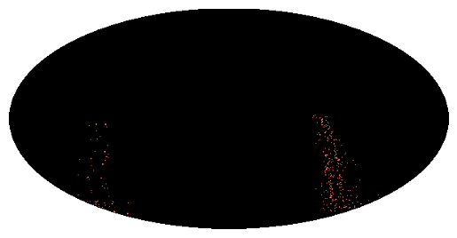
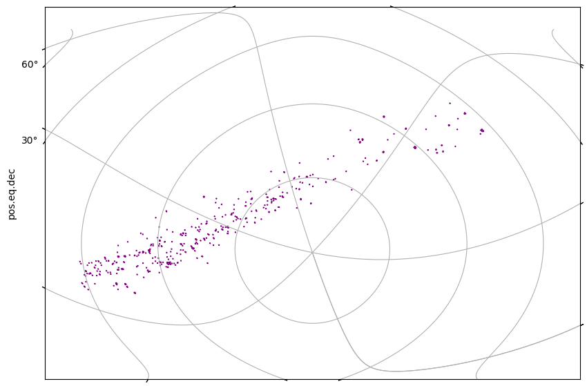
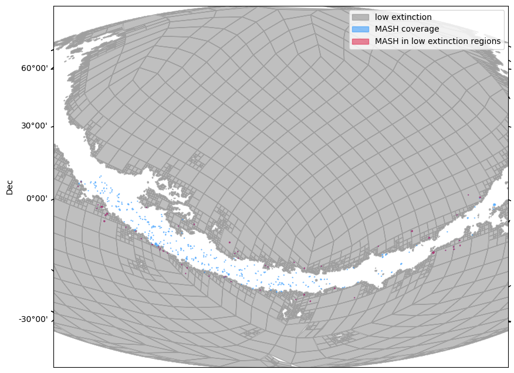
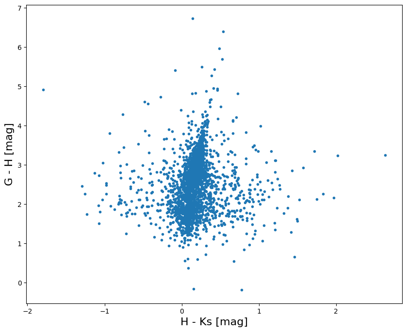

The MASH planeraty nebulae catalog: Advanced usage of HiPS and MOCs to explore complex regions of interest#
Stefania Amodea¹, Matthieu Baumann¹, Thomas Boch¹, Caroline Bot¹, Katarina A. Lutz¹, Manon Marchand¹.
Université de Strasbourg, CNRS, Observatoire Astronomique de Strasbourg, UMR 7550, F-67000, Strasbourg, France
Thomas Boch and Caroline Bot wrote the original version of this tutorial, available on the EURO-VO tutorials page. It was presented at the workshop “Detecting the unexpected, Discovery in the Era of Astronomically Big Data”. The version here is an adaptation to jupyter notebooks by the Strasbourg astronomical Data Center (CDS) team.
Introduction#
This tutorial demonstrates an advanced usage of Hierarchical Progressive Surveys (HiPS) and Multi-Order Coverage (MOC) maps. Wis this tutorial, you will:
learn how to find fits files
build a map of the coverage of all the fits files
select only the parts of this map that correspond to low-extinction regions
retrieve objects from large catalogs inside the obtained map – that has a non-trivial shape and non-necessarily-connected regions
combine catalogs to visualize a color-color diagram
# Standard Library
from pathlib import Path
# Astronomy tools
import astropy.units as u
from astropy.coordinates import Angle, SkyCoord, match_coordinates_sky
from astropy.io import fits
# Access astronomical databases
import pyvo
from astroquery.vizier import Vizier
# Moc and HEALPix tools
import cdshealpix
import mocpy
# For plots
import matplotlib.pyplot as plt
# Data handling
import numpy as np
Step 1: Finding the images#
We want to find all Short-Red images in the Macquarie/AAO/Strasbourg Hα Planetary Galactic catalog (MASH) using the VizieR associated data service.

The VizieR service at CDS inventories astronomical catalogs published in the literature. Some of these catalogs contain data associated with publications and the tables therein. This data can be browsed and explored through the VizieR-associated data service, linked to the traditional VizieR table service. Here we look for images associated with the MASH catalog of planetary nebulae (Parker et. al. 2006-2008). The MASH fits files are cut-outs extracted from a larger Hα and Short Red survey to constitute a set of regions of interest around planetary nebulae.
To find VizieR-associated data, we use the Table Access Protocol (TAP) with the VizieR endpoint. Through the VizieR TAP endpoint, we can search for tables, their content, and information on associated data.
First, we search for the MASH catalog:
# give the address of the service, you can also directly visit the website
tap_vizier = pyvo.dal.TAPService("https://tapvizier.cds.unistra.fr/TAPVizieR/tap")
# a query that searches for all tables with the words MASH and Parker in their description
query = """
SELECT * FROM tables
WHERE description LIKE '%MASH%Parker%'
"""
mash_catalogues = tap_vizier.search(query).to_table()
mash_catalogues
| schema_name | table_name | table_type | description | utype | nrows |
|---|---|---|---|---|---|
| object | object | object | object | object | object |
| J_MNRAS | J/MNRAS/412/223/table4 | table | The nine MASH PNe detected and possibly detected in the PMN survey ( Bojicic I.S., Parker Q.A., Filipovic M.D., Frew D.J.) | 9 | |
| J_MNRAS | J/MNRAS/412/223/table1 | table | MASH PNe detected in the NVSS ( Bojicic I.S., Parker Q.A., Filipovic M.D., Frew D.J.) | 201 | |
| V_combined | V/127A/mash2 | table | The MASH-II Supplement (from paper II) ( Parker Q.A., Acker A., Frew D.J., Hartley M., Peyaud A.E.J., Phillipps S., Russeil D., Beaulieu S.F., Cohen M., Koppen J., Marcout J., Miszalski B., Morgan D.H., Morris R.A.H., Ochsenbein F., Pierce M.J.,) | 335 | |
| V_combined | V/127A/mash1 | table | The MASH Catalog of Planetary Nebulae (paper I) ( Parker Q.A., Acker A., Frew D.J., Hartley M., Peyaud A.E.J., Phillipps S., Russeil D., Beaulieu S.F., Cohen M., Koppen J., Marcout J., Miszalski B., Morgan D.H., Morris R.A.H., Ochsenbein F., Pierce M.J.,) | 903 | |
| J_MNRAS | J/MNRAS/412/223/mpgs2 | table | MASH PNe detected in the MPGS-2 (Cat. VIII/82) ( Bojicic I.S., Parker Q.A., Filipovic M.D., Frew D.J.) | 81 |
In this tutorial, we are interested in the tables belonging to the catalogs V/127A. This includes tables V/127A/mash1 and V/127A/mash2. To have a look at the content of these tables, we do the following:
query = """
SELECT TOP 5 * FROM \"V/127A/mash1\"
"""
mash1_head = tap_vizier.search(query).to_table()
mash1_head
| recno | n_PNG | PNG | Name | RAJ2000 | DEJ2000 | GLon | GLat | MajDiam | MinDiam | CS | Morph | Tel | ObsDate | HaExp | HaFld | Comments | img | ImageHa | ImageSr | AssocData |
|---|---|---|---|---|---|---|---|---|---|---|---|---|---|---|---|---|---|---|---|---|
| deg | deg | deg | deg | arcsec | arcsec | 'Y:M:D' | ||||||||||||||
| int32 | str1 | object | object | float64 | float64 | float64 | float64 | float64 | float64 | object | object | object | float64 | object | object | object | object | object | object | object |
| 29 | L | G234.7-02.2 | PHR0724-2021 | 111.05458333333331 | -20.36361111111111 | 234.7045 | -2.2774 | 134.5 | 54.0 | A | SA | 2452672.0 | HA18201 | HA842 | Large, very faint diffuse arcuate nebula; has [NII]~2xH-alpha, nothing in blue | 1029 | img_ha | img_sr | fits | |
| 2 | P | G227.3-12.0 | PHR0633-1808 | 98.35374999999999 | -18.13972222222222 | 227.3207 | -12.0289 | 17.0 | 15.0 | Ea | SA | 2452672.0 | HA18191 | HA926 | Very faint, partial arcuate nebula also observed M1 060100; [NII]~0.8xH-alpha, strong [SII], only weak H-beta in blue - inconclusive | 1002 | img_ha | img_sr | fits | |
| 16 | T | G227.2-03.4 | PHR0705-1419 | 106.41041666666665 | -14.318055555555553 | 227.2852 | -3.4029 | 15.0 | 15.0 | E | SA | 2452668.0 | HA18244 | HA1017 | Small, circular PN around a faint central star; also observed M1 040100; [NII]~0.7 H-alpha, [OIII]>>H-beta | 1016 | img_ha | img_sr | fits | |
| 5 | L | G223.6-06.8 | PHR0646-1235 | 101.60583333333332 | -12.598888888888887 | 223.6338 | -6.8035 | 40.0 | 37.0 | E | SA | 2453788.0 | HA18194 | HA1016 | Slightly oval very faint PN candidate - has [OIII] and H-alpha | 1005 | img_ha | img_sr | fits | |
| 10 | P | G224.3-05.5 | PHR0652-1240 | 103.08458333333331 | -12.67611111111111 | 224.3504 | -5.5463 | 187.0 | 180.0 | I | SA | 2452670.0 | HA18244 | HA1017 | Faint, extended S-shaped emission nebula, possible evolved PN, also observed M1 080100; has [NII]~0.8Ha, [OIII], strong [SII], [OIII]>H-beta | 1010 | img_ha | img_sr | fits |
As you can see, the last column of this table is called AssocData and contains the entry fits. If you look at this table on the VizieR web interface, you can download the associated fits file. Within this notebook, we query the obscore database to get the URLs to the fits file. Using the astropy.io.fits module, we can open the fits files from their URLs.
obs_tap_vizier = pyvo.dal.TAPService(
"https://cdsarc.cds.unistra.fr/saadavizier.tap/tap",
)
query = """
SELECT TOP 5 * FROM obscore
WHERE obs_collection='V/127A'
"""
mash_fits = obs_tap_vizier.search(query).to_table()
mash_fits
| access_estsize | access_format | access_url | bib_reference | calib_level | dataproduct_type | em_band | em_max | em_min | extension | facility_name | has_wcs | instrument_name | obs_collection | obs_id | obs_publisher_did | oidsaada | o_ucd | pol_states | s_dec | s_fov | s_ra | s_region | s_resolution | target_name | t_exptime | t_max | t_min | t_resolution |
|---|---|---|---|---|---|---|---|---|---|---|---|---|---|---|---|---|---|---|---|---|---|---|---|---|---|---|---|---|
| kbyte | spect | meta.code | meta.code | deg | deg | deg | arcsec | |||||||||||||||||||||
| int64 | object | object | object | int32 | object | object | float64 | float64 | int32 | object | int32 | object | object | object | object | object | object | object | float64 | float64 | float64 | object | float64 | object | float64 | float64 | float64 | float64 |
| 610560 | application/fits | https://cdsarc.cds.unistra.fr/saadavizier/download?oid=864975549779410945 | 2006MNRAS.373...79P | -1 | image | Optical | 1e-06 | 3e-07 | -- | UKST | 5 | SuperCOSMOS I | V/127A | 1032_sr.fits | ivo://CDS.VizieR/V/127A?res=1032_sr.fits | 864975549779410945 | obs.image | NotSet | -13.784389854801203 | 0.0713021682865721 | 111.43275777455307 | Polygon ICRS 111.46664940645094 -13.81781914701963 111.39832407190251 -13.817324215795937 111.3988758446347 -13.750955924906409 111.46718176614709 -13.751450706358609 | 0.948991575097523 | -- | -- | 51226.0 | -- | |
| 740160 | application/fits | https://cdsarc.cds.unistra.fr/saadavizier/download?oid=864975549779410951 | 2006MNRAS.373...79P | -1 | image | Optical | 1e-06 | 3e-07 | -- | UKST | 5 | SuperCOSMOS I | V/127A | 1034_ha.fits | ivo://CDS.VizieR/V/127A?res=1034_ha.fits | 864975549779410951 | obs.image | NotSet | -17.12049297622673 | 0.07123944496920925 | 111.78451610217952 | Polygon ICRS 111.8191479048229 -17.153711083791936 111.74974303867411 -17.15359964722061 111.74989666803143 -17.087268981666405 111.8192767884711 -17.087380370020252 | 0.9485038734315203 | -- | -- | 52338.0 | -- | |
| 596160 | application/fits | https://cdsarc.cds.unistra.fr/saadavizier/download?oid=864975549779410955 | 2006MNRAS.373...79P | -1 | image | Optical | 1e-06 | 3e-07 | -- | UKST | 5 | SuperCOSMOS I | V/127A | 1034_sr.fits | ivo://CDS.VizieR/V/127A?res=1034_sr.fits | 864975549779410955 | obs.image | NotSet | -17.120533969278245 | 0.07124314880377468 | 111.7845314034197 | Polygon ICRS 111.8191637002453 -17.153753988164176 111.74975722819107 -17.153640656320004 111.7499114759699 -17.08730806317958 111.81929320101966 -17.087421346614327 | 0.9485285228101485 | -- | -- | 50871.0 | -- | |
| 731520 | application/fits | https://cdsarc.cds.unistra.fr/saadavizier/download?oid=864975549779410959 | 2006MNRAS.373...79P | -1 | image | Optical | 1e-06 | 3e-07 | -- | UKST | 5 | SuperCOSMOS I | V/127A | 1036_ha.fits | ivo://CDS.VizieR/V/127A?res=1036_ha.fits | 864975549779410959 | obs.image | NotSet | -21.862099427980556 | 0.07130134708963763 | 112.69528726569132 | Polygon ICRS 112.73146814532774 -21.89490077932626 112.65997554014551 -21.895645624610193 112.659123005937 -21.829290184523508 112.73058240266795 -21.828545713789918 | 0.9488088411876365 | -- | -- | 51163.0 | -- | |
| 590400 | application/fits | https://cdsarc.cds.unistra.fr/saadavizier/download?oid=864975549779410960 | 2006MNRAS.373...79P | -1 | image | Optical | 1e-06 | 3e-07 | -- | UKST | 5 | SuperCOSMOS I | V/127A | 1005_sr.fits | ivo://CDS.VizieR/V/127A?res=1005_sr.fits | 864975549779410960 | obs.image | NotSet | -12.59878194718445 | 0.06695119600443825 | 101.605805625331 | Polygon ICRS 101.64022494465036 -12.631531553985315 101.57226287333897 -12.63235954506209 101.57139509987323 -12.56602794013158 101.63933959085792 -12.565200170324758 | 0.9485060738987898 | -- | -- | 51156.0 | -- |
As you can see, the result from this query provides information on the fits files associated with the MASH catalogs. In particular, the column access_url provides the location of the data. To get the first image we could do:
image = fits.open(mash_fits['access_url'][0])
and then work on the image, plot it or save it to our machine. However, downloading all the data takes quite some time. For this tutorial, we prepared a subsample of 335 of these Short Red images that will run promptly but we encourage you to try accessing the full Short Red sample on your own later. The subsample is available either at http://astro.u-strasbg.fr/~bot/BochBot.tar.gz or in the Data Folder of this repository. If you run this tutorial on Binder, you do not need to download anything.
Step 2: Create a MOC of the MASH images#
The multi-order coverage (MOC) map of a set of images represents their sky coverage. MOCs can describe arbitrary zones in the sky which do not need to be connected. You’ll see that the union or intersection of two MOCs requires few time and computational effort. Catalogs can also be filtered by MOCs.
Here we want to use the fits files just downloaded to create a MOC map corresponding to the coverage of the MASH images.
Organising data#
# Where to find fits images downloaded from the archive above
datadir = Path("Data/MASH_Sample/")
datadir.mkdir(parents=True, exist_ok=True)
# Make new directory where to save MOCs
outdir = Path("Data/Result_moc/")
outdir.mkdir(parents=True, exist_ok=True)
In most cases, we could ignore the next cell. However, some possible deprecated keywords in the fits header would hamper the MOC creation and would cause errors in the underlying astropy.wcs.WCS module. This is why we rewrite the headers of the fits files so that they only contain the useful keywords needed to define the coordinate frame correctly before using mocpy.
# Get a list of all fits files in datadir
mash_file_list = datadir.glob("*_sr.fits")
# Modify the header so that the MOC creation works smoothly
for file_name in mash_file_list:
ima = fits.open(file_name)
hdr = ima[0].header
needed_keywords = [
"SIMPLE",
"BITPIX",
"NAXIS",
"EXTEND", # basic fits keywords
# essential WCS keywords
"NAXIS1",
"NAXIS2",
"RADECSYS",
"CD1_1",
"CD1_2",
"CD2_1",
"CD2_2",
"CTYPE1",
"CUNIT1",
"CDELT1",
"CRPIX1",
"CRVAL1",
"CTYPE2",
"CUNIT2",
"CDELT2",
"CRPIX2",
"CRVAL2",
# used additionally by mocpy
"EQUINOX",
"BLANK",
]
new_hdr = fits.Header()
for keyword in needed_keywords:
try:
new_hdr[keyword] = ima[0].header[keyword]
except KeyError:
continue
new_hdr["RADESYS"] = new_hdr["RADECSYS"]
fits.writeto(
outdir / Path(file_name.stem + "_modified.fits"),
ima[0].data,
new_hdr,
output_verify="fix",
overwrite=True,
)
ima.close()
Create the MOC#
Here we can create the MOC of the MASH images with the MOCPy module. This can take a few seconds.
# Get a list of the updated files and create the MOC
mash_file_list = outdir.glob("*_sr_modified.fits")
moc_mash = mocpy.MOC.from_fits_images(mash_file_list, max_norder=15)
moc_mash.save(str(outdir / "mash_moc.fits"), overwrite=True)
WARNING: FITSFixedWarning: RADECSYS= 'FK5 '
the RADECSYS keyword is deprecated, use RADESYSa. [astropy.wcs.wcs]
Plot the MOC#
We can chose between two of the MOCpy methods to plot the MOC
# A one-liner for a very fast vizualisation
moc_mash.display_preview()

# With a bit more control over the output, the MOC.wcs method
fig = plt.figure(figsize=(10, 7))
wcs = moc_mash.wcs(fig)
ax = fig.add_subplot(projection=wcs)
ax.grid(True) # noqa: FBT003
moc_mash.fill(ax, wcs, color="purple", alpha=0.5)
moc_mash.border(ax, wcs, color="purple")

You can see how the MOC has arbitrary shapes and not all regions are connected.
And for more control over the plot parameters, there is also the mocpy.WCS method (!)
Step 3: Load an archival extinction map and create the MOC of the low extinction regions#
Different works (e.g. Schlegel et al. 1998, Schlafly & Finkbeiner 2011, Green et al. 2015…) have created extinction maps of the sky that are publicly available. Some of these maps are all-sky maps, while others have higher resolutions, or come from different methods… They can be found in HEALPix format (among others) on the Legacy Archive for Microwave Background Data Analysis (LAMBDA) website or on the Analysis Center for Extended Data (CADE) website.
For this tutorial, we will download the well-known all-sky extinction map from Schlegel et al. from the LAMBDA website and define the low extinction area for which \(0 < E(B-V) < 0.5\) as a MOC. It has an information page.
The map is available here: https://lambda.gsfc.nasa.gov/data/foregrounds/SFD/lambda_sfd_ebv.fits and we save it to disc.
ext_map = fits.open(
"https://lambda.gsfc.nasa.gov/data/foregrounds/SFD/lambda_sfd_ebv.fits",
)
ext_map.writeto(outdir / "Schlegel_extinction_map.fits", overwrite=True)
ext_map.close()
We are only interested in regions with low extinction. So we aim to get a MOC of all regions where the extinction values from the Schlegel et al. map are between 0 and 0.5mag. The extinction map we got from the NASA webpage is in the HEALPix format. This is an efficient presentation of all-sky maps. The HEALPix tesselation is also used by MOCs. So to get the MOC from the extinction map, we do the following.
First, we check the coordinate system in the map header. We will need to convert to equatorial coordinates, change the projection of the map, and set the order (i.e. resolution) of the map.
# open the downloaded FITS file
hdul = fits.open(outdir / "Schlegel_extinction_map.fits")
hdr = hdul[0].header
hdr
SIMPLE = T / file does conform to FITS standard
BITPIX = 32 / number of bits per data pixel
NAXIS = 0 / number of data axes
EXTEND = T / FITS dataset may contain extensions
COMMENT FITS (Flexible Image Transport System) format is defined in 'Astronomy
COMMENT and Astrophysics', volume 376, page 359; bibcode: 2001A&A...376..359H
DATE = '2003-02-05T00:00:00' /file creation date (YYYY-MM-DDThh:mm:ss UT)
OBJECT = 'ALL-SKY ' / Portion of sky given
COMMENT This file contains an all-sky Galactic reddening map, E(B-V), based on
COMMENT the derived reddening maps of Schlegel, Finkbeiner and Davis (1998).
COMMENT Software and data files downloaded from their website were used to
COMMENT interpolate their high resolution dust maps onto pixel centers
COMMENT appropriate for a HEALPix Nside=512 projection in Galactic
COMMENT coordinates. This file is distributed and maintained by LAMBDA.
REFERENC= 'Legacy Archive for Microwave Background Data Analysis (LAMBDA) '
REFERENC= ' http://lambda.gsfc.nasa.gov/ '
REFERENC= 'Maps of Dust Infrared Emission for Use in Estimation of Reddening an'
REFERENC= ' Cosmic Microwave Background Radiation Foregrounds', '
REFERENC= ' Schlegel, Finkbeiner & Davis 1998 ApJ 500, 525 '
REFERENC= 'Berkeley mirror site for SFD98 data: http://astron.berkeley.edu/dust'
REFERENC= 'Princeton mirror site for SFD98 data: '
REFERENC= ' http://astro/princeton.edu/~schlegel/dust'
REFERENC= 'HEALPix Home Page: http://www.eso.org/science/healpix/ '
RESOLUTN= 9 / Resolution index
SKYCOORD= 'Galactic' / Coordinate system
PIXTYPE = 'HEALPIX ' / Pixel algorithm
ORDERING= 'NESTED ' / Ordering scheme
NSIDE = 512 / Resolution parameter
NPIX = 3145728 / # of pixels
FIRSTPIX= 0 / First pixel (0 based)
LASTPIX = 3145727 / Last pixel (0 based)
print((hdul[1].data).shape)
hdul[1].data
(3145728,)
FITS_rec([( 9.625492, 1.), (46.090515, 1.), ( 8.18071 , 1.), ...,
(15.149189, 1.), (14.107367, 1.), (15.463686, 1.)],
dtype=(numpy.record, [('TEMPERATURE', '>f4'), ('N_OBS', '>f4')]))
The data field here has a specific shape. It contains tuples for which the first value is the extinction (named ‘TEMPERATURE’) and the second one is the number of observations of the value (you can check that it is 1 everywhere).
extinction_values = hdul[1].data["TEMPERATURE"]
Let’s extract the information about the number of sides and the order of the healpix map from the header of the fits file
nside = hdul[0].header["NSIDE"]
norder = hdul[0].header["RESOLUTN"]
The header allows to see that this map is in galactic coordinates. We will need to convert this into equatorial coordinates to compare with our other maps.
# Creation of an HEALpix grid at order 9 in nested ordering
healpix_index = np.arange(12 * 4**norder, dtype=np.uint64)
print(
f"We can check the the NPIX value corresponds to the one in the header here: {len(healpix_index)}",
)
We can check the the NPIX value corresponds to the one in the header here: 3145728
# Get the coordinates of the centers of these healpix cells
center_coordinates_in_equatorial = cdshealpix.healpix_to_skycoord(
healpix_index,
depth=9,
)
center_coordinates_in_equatorial
<SkyCoord (ICRS): (ra, dec) in deg
[( 45. , 0.0746039 ), ( 45.08789062, 0.14920793),
( 44.91210938, 0.14920793), ..., (315.08789062, -0.14920793),
(314.91210938, -0.14920793), (315. , -0.0746039 )]>
# Convert this into galactic coordinates
center_coordinates_in_galactic = center_coordinates_in_equatorial.galactic
center_coordinates_in_galactic
<SkyCoord (Galactic): (l, b) in deg
[(176.8796283 , -48.85086427), (176.89078038, -48.7358142 ),
(176.70525363, -48.86216423), ..., ( 48.82487228, -28.4122831 ),
( 48.7216889 , -28.26178141), ( 48.84578935, -28.29847774)]>
# Calculate the bilinear interpolation we must apply to each healpix cell to get the values in the other coordinate system
healpix, weights = cdshealpix.bilinear_interpolation(
center_coordinates_in_galactic.l,
center_coordinates_in_galactic.b,
depth=norder,
)
# Apply the interpolation
ext_map_equatorial_nested = (extinction_values[healpix.data] * weights.data).sum(axis=1)
ext_map_equatorial_nested
array([0.08981742, 0.0991632 , 0.08249644, ..., 0.08323811, 0.08352184,
0.0820533 ])
Next we declare which pixel we want to use, let’s take all pixels with an extinction lower than 0.5:
low_extinction_index = np.where(ext_map_equatorial_nested < 0.5)[0]
print(
f"The low extinction criteria keeps {round((len(low_extinction_index)/ len(extinction_values)*100), 2)}% of the sky map",
)
The low extinction criteria keeps 86.74% of the sky map
And let’s create a MOC from this criteria
moc_low_extinction = mocpy.MOC.from_healpix_cells(
low_extinction_index,
np.full(
(
len(
low_extinction_index,
)
),
norder,
),
norder,
)
Step 4: Find out which regions are covered by the MASH short-red images in the low extinction regions defined above#
To find out the sky regions of the MASH sample that are at low extinction, we build the intersection of the two MOCs.
moc_intersection = moc_low_extinction.intersection(moc_mash)
# Once the intersection is bluit, we can for example print the sky fraction :
print(
f"The intersection of the two MOCs covers {round(moc_intersection.sky_fraction * 100, 4)}% of the sky",
)
The intersection of the two MOCs covers 0.0013% of the sky
Now we can visualize the coverage of the two MOCs and their intersection. The grey area is where the extinction is low. The blue one is the MASH coverage. The tiny red dots show the MASH coverage in low extinction regions.
fig = plt.figure(111, figsize=(10, 8))
with mocpy.WCS(
fig,
fov=200 * u.deg,
center=SkyCoord(200, -20, unit="deg", frame="icrs"),
coordsys="icrs",
rotation=Angle(0, u.degree),
projection="AIT",
) as wcs:
ax = fig.add_subplot(1, 1, 1, projection=wcs)
moc_low_extinction.fill(
ax=ax,
wcs=wcs,
alpha=0.5,
fill=True,
color="grey",
label="low extinction",
)
moc_mash.fill(
ax=ax,
wcs=wcs,
alpha=0.5,
fill=True,
color="dodgerblue",
label="MASH coverage",
)
moc_intersection.fill(
ax=ax,
wcs=wcs,
alpha=0.5,
fill=True,
color="crimson",
label="MASH in low extinction regions",
)
# Sets labels
ax.set_xlabel("RA")
ax.set_ylabel("Dec")
# Sets ticks
lon, lat = ax.coords[0], ax.coords[1]
lon.set_major_formatter("hh:mm:ss")
lat.set_major_formatter("dd:mm")
lon.set_ticklabel(exclude_overlapping=True)
lat.set_ticklabel(exclude_overlapping=True)
lon.set_ticks(spacing=2 * u.hourangle)
plt.legend()
<matplotlib.legend.Legend at 0x7f73a48a3550>

Step 5: Query the 2MASS and Gaia Catalogues by MOC#
Without the usage of MOC, querying for sources in the low extinction regions covered by the MASH subsample would be tedious or even impossible. Indeed, one would need to load the whole catalog and make selections which would not be possible given the size of some catalogs. Alternatively, one would need to query the catalog field by field, which would take time and several queries. Instead, here we will use the power of MOC files to query large catalogs directly in the covered regions only. We will use coverages of the low extinction and MASH regions to query for sources from the Gaia and 2MASS surveys in these highly non-continuous and non-trivial shape areas.
First, let’s see which Gaia and 2MASS catalogs are available on VizieR. We could, as above, use the TAP endpoint of VizieR. But we show below the Vizier module in the astroquery package.
catalog_list_twomass = Vizier.find_catalogs("Cutri")
for k, v in catalog_list_twomass.items():
print(k, ": ", v.description)
WARNING: UnitsWarning: The unit 'pix' has been deprecated in the VOUnit standard. [astropy.units.format.utils]
WARNING: UnitsWarning: The unit 'ct' has been deprecated in the VOUnit standard. [astropy.units.format.utils]
II/126 : IRAS Serendipitous Survey Catalog (IPAC 1986)
II/241 : 2MASS Catalog Incremental Data Release (IPAC/UMass, 2000)
II/246 : 2MASS All-Sky Catalog of Point Sources (Cutri+ 2003)
II/281 : 2MASS 6X Point Source Working Database / Catalog (Cutri+ 2006)
II/307 : WISE Preliminary Data Release (Cutri+ 2011)
II/311 : WISE All-Sky Data Release (Cutri+ 2012)
II/328 : AllWISE Data Release (Cutri+ 2013)
II/365 : The CatWISE2020 catalog (updated version 28-Jan-2021) (Marocco+, 2021)
VII/233 : The 2MASS Extended sources (IPAC/UMass, 2003-2006)
J/ApJ/560/566 : K-band galaxy luminosity function from 2MASS (Kochanek+, 2001)
J/ApJ/564/421 : Spectra of T dwarfs. I. (Burgasser+, 2002)
J/ApJ/569/23 : Optical polarisation of 2MASS QSOs (Smith+, 2002)
J/ApJ/635/214 : Chandra X-ray sources and NIR identifications (Ebisawa+, 2005)
J/ApJ/713/330 : Spitzer observations of major-merger galaxies (Xu+, 2010)
J/ApJ/719/550 : Deep NIR imaging of {rho} Oph cloud core (Marsh+, 2010)
J/ApJ/741/68 : Main Belt asteroids with WISE/NEOWISE. I. (Masiero+, 2011)
J/ApJ/742/40 : Jovian Trojans asteroids with WISE/NEOWISE (Grav+, 2011)
J/ApJ/743/156 : NEOWISE observations of NEOs: preliminary results (Mainzer+, 2011)
J/ApJ/744/197 : WISE/NEOWISE observations of Hilda asteroids (Grav+, 2012)
J/ApJ/759/L8 : WISE/NEOWISE observations of main belt asteroids (Masiero+, 2012)
J/ApJ/760/L12 : WISE/NEOWISE NEOs preliminary thermal fits (Mainzer+, 2012)
J/ApJ/780/92 : Light curves of the RR Lyr SDSS J015450.17+001500.7 (Szabo+, 2014)
J/ApJ/783/122 : AllWISE motion survey (Kirkpatrick+, 2014)
J/ApJ/784/110 : NEOWISE observations of 105 near-Earth objects (Mainzer+, 2014)
J/ApJ/792/30 : NEOWISE magnitudes for near-Earth objects (Mainzer+, 2014)
J/ApJ/805/90 : WISE ELIRGs and comparison with QSOs (Tsai+, 2015)
J/ApJ/814/117 : NEOWISE Reactivation mission: 1st yr data (Nugent+, 2015)
J/ApJ/874/82 : Follow-up photometry & spectroscopy of PTF14jg (Hillenbrand+, 2019)
J/ApJS/95/1 : Atlas of Quasar Energy Distributions (Elvis+ 1994)
J/ApJS/172/663 : Infrared observations of the Pleiades (Stauffer+, 2007)
J/ApJS/175/191 : Variables from 2MASS calibration fields (Plavchan+, 2008)
J/ApJS/190/100 : NIR proper motion survey using 2MASS (Kirkpatrick+, 2010)
J/ApJS/199/26 : The 2MASS Redshift Survey (2MRS) (Huchra+, 2012)
J/ApJS/224/36 : The AllWISE motion survey (AllWISE2) (Kirkpatrick+, 2016)
J/ApJS/234/23 : The WISE AGN candidates catalogs (Assef+, 2018)
J/AJ/112/62 : Quasar absorption-line systems (Tanner+ 1996)
J/AJ/125/2521 : 2MASS6x survey of the Lockman Hole (Beichman+, 2003)
J/AJ/126/63 : Host galaxies of 2MASS-QSOs with z<=3 (Hutchings+, 2003)
J/AJ/127/646 : Unbiased census of AGN in 2MASS (Francis+, 2004)
J/AJ/135/2245 : Absolute spectrum of the Sun and Vega for 0.2-30um (Rieke+, 2008)
J/AJ/144/148 : Infrared photometry of brown dwarf and Hyper-LIRG (Griffith+, 2012)
J/AJ/152/63 : NEOWISE reactivation mission: 2nd yr data (Nugent+, 2016)
J/AJ/154/53 : WISE/NEOWISE observations of comets (Bauer+, 2017)
J/AJ/154/168 : NEOWISE: thermal model fits for NEOs and MBAs (Masiero+, 2017)
J/AJ/156/60 : Thermal model fits for short-arc NEOs with NEOWISE (Masiero+, 2018)
J/PASP/113/10 : Sub-mJy radio sources complete sample (Masci+, 2001)
catalog_list_gaia = Vizier.find_catalogs("Gaia DR2", max_catalogs=1000)
for k, v in catalog_list_gaia.items():
print(k, ": ", v.description)
WARNING: UnitsWarning: Unit 'Rgeo' not supported by the VOUnit standard. [astropy.units.format.vounit]
WARNING: UnitsWarning: Unit 'Earth' not supported by the VOUnit standard. [astropy.units.format.vounit]
WARNING: UnitsWarning: The unit 'au' has been deprecated in the VOUnit standard. Suggested: 1.4959787e+11m. [astropy.units.format.utils]
WARNING: UnitsWarning: Unit 'Sun' not supported by the VOUnit standard. Did you mean uN? [astropy.units.format.vounit]
WARNING: UnitsWarning: The unit 'pix' has been deprecated in the VOUnit standard. [astropy.units.format.utils]
WARNING: UnitsWarning: Unit 'Mjup' not supported by the VOUnit standard. [astropy.units.format.vounit]
WARNING: UnitsWarning: The unit 'a' has been deprecated in the VOUnit standard. Suggested: 365.25d. [astropy.units.format.utils]
WARNING: UnitsWarning: Unit 'kau' not supported by the VOUnit standard. Did you mean 1000a, kA, ka (deprecated), kadu or ku? [astropy.units.format.vounit]
WARNING: UnitsWarning: Unit 'Mgeo' not supported by the VOUnit standard. [astropy.units.format.vounit]
WARNING: UnitsWarning: Unit 'ppm' not supported by the VOUnit standard. Did you mean Pm or pm? [astropy.units.format.vounit]
I/345 : Gaia DR2 (Gaia Collaboration, 2018)
I/347 : Distances to 1.33 billion stars in Gaia DR2 (Bailer-Jones+, 2018)
I/349 : StarHorse, Gaia DR2 photo-astrometric distances (Anders+, 2019)
II/360 : Gaia DR2 x AllWISE catalogue (Marton+, 2019)
IV/35 : Gaia DR2-WISE Galactic Plane Matches (Wilson+, 2018)
VI/156 : M-dwarf Lum-Temp-Radius relationships (Morrell+, 2019)
VII/285 : Gaia DR2 quasar and galaxy classification (Bailer-Jones+, 2019)
J/ApJ/862/138 : BANYAN. XIII. Nearby young assoc. with Gaia DR2 (Gagne+, 2018)
J/ApJ/863/89 : Gaia DR2 PMs of stars in ultra-faint MW satellites (Simon, 2018)
J/ApJ/866/99 : Revised radii of KIC stars & planets using Gaia DR2 (Berger+, 2018)
J/ApJ/867/151 : YSOs in the Gould Belt regions with Gaia-DR2 data (Dzib+, 2018)
J/ApJ/868/70 : Hot subdwarf stars from Gaia DR2 and LAMOST DR5 (Lei+, 2018)
J/ApJ/870/32 : Kinematics in young star clusters & associations (Kuhn+, 2019)
J/ApJ/872/85 : Detached eclipsing binaries with Gaia parallaxes (Graczyk+, 2019)
J/ApJ/873/132 : ICRF3 radio-loud quasars with Gaia DR2 data (Makarov+, 2019)
J/ApJ/874/138 : Gaia and LAMOST DR4 M giant members of Sgr stream (Li+, 2019)
J/ApJ/875/77 : Proper motions of MW satellites with Gaia & DES (Pace+, 2019)
J/ApJ/877/29 : Opt & NIR SMARTS/ANDICAM photometry for DQ Tau (Muzerolle+, 2019)
J/ApJ/878/111 : Members in Serpens Molecular Cloud with Gaia DR2 (Herczeg+, 2019)
J/ApJ/881/135 : Hot subdwarf stars from Gaia DR2 and LAMOST DR5. II. (Lei+, 2019)
J/ApJ/883/8 : Cand. young OB stars from GALEX & Gaia DR2 (Casetti-Dinescu+, 2019)
J/ApJ/884/6 : Known members of Orion A with Gaia DR2 data (McBride+, 2019)
J/ApJ/886/100 : High-mass white dwarfs in Gaia DR2 (Cheng+, 2019)
J/ApJ/887/126 : Follow-up obs. of the PSJ0147+4630 lens system (Goicoechea+, 2019)
J/ApJ/888/73 : Varstrometry of SDSS quasars with Gaia DR2 data (Hwang+, 2020)
J/ApJ/889/99 : Gaia DR2 Blanco 1 member candidates (Zhang+, 2020)
J/ApJ/889/117 : Hot subdwarf stars from Gaia DR2 & LAMOST DR6+7. I. (Lei+, 2020)
J/ApJ/889/176 : Very low-mass binaries with Gaia DR2 data (Faherty+, 2020)
J/ApJ/898/64 : Hot subdwarf stars from Gaia with LAMOST sp. II. RVs (Luo+, 2020)
J/ApJ/898/173 : Solar analog rotations from Kepler & Gaia (Do Nascimento+, 2020)
J/ApJ/899/83 : 723 Gaia DR2 White dwarfs cand. in Local Galactic Halo (Kim+, 2020)
J/ApJ/910/46 : Galactic anticenter substructure stars from LAMOST (Li+, 2021)
J/ApJS/245/32 : Newly identified star clusters in Gaia DR2 (Liu+, 2019)
J/ApJS/246/4 : Catalog of ultrawide binary stars from Gaia DR2 (Tian+, 2020)
J/ApJS/252/3 : High-velocity stars in the Gal. halo from LAMOST & Gaia (Li+, 2021)
J/ApJS/253/58 : Ages of field stars from white dwarf comp. in Gaia (Qiu+, 2021)
J/ApJS/254/20 : Stellar groups in Taurus field from Gaia DR2 & LAMOST (Liu+, 2021)
J/ApJS/256/28 : Hot subdwarf stars with Gaia DR2 and LAMOST DR7 data (Luo+, 2021)
J/ApJS/260/8 : 541 new open cluster candidates (He+, 2022)
J/A+A/616/A7 : Gaia DR2 radial velocity standard stars catalog (Soubiran+, 2018)
J/A+A/616/A12 : Gaia DR2 sources in GC and dSph (Gaia Collaboration+, 2018)
J/A+A/616/A37 : Close encounters to the Sun in Gaia DR2 (Bailer-Jones+, 2018)
J/A+A/616/L2 : Planetary Nebulae distances in Gaia DR2 (Kimeswenger+, 2018)
J/A+A/616/L15 : Parallaxes and Proper Motions of OB stars (Xu+, 2018)
J/A+A/617/A135 : 20 years of photometric microlensing (Mustill+, 2018)
J/A+A/618/A44 : Predicted microlensing events from Gaia DR2 (Bramich, 2018)
J/A+A/618/A56 : Gaia GraL. II. Known multiply imaged quasars (Ducourant+, 2018)
J/A+A/618/A59 : Gaia DR2 confirmed new nearby open clusters (Castro-Ginard+, 2018)
J/A+A/618/A93 : Gaia DR2 open clusters in the Milky Way (Cantat-Gaudin+, 2018)
J/A+A/619/A8 : Cepheid period-luminosity-metallicity relation (Groenewegen, 2018)
J/A+A/619/A106 : 3D shape of Orion A from Gaia DR2 (Grossschedl+, 2018)
J/A+A/619/A155 : Open cluster kinematics with Gaia DR2 (Soubiran+, 2018)
J/A+A/619/A180 : Gaia DR2 photometric sensitivity curves (Maiz Apellaniz+, 2018)
J/A+A/619/L8 : Ultra-cool dwarfs candidates in Gaia DR2 (Reyle, 2018)
J/A+A/620/A91 : New asteroid models (Durech+, 2018)
J/A+A/620/A128 : Gaia DR2 study of Herbig Ae/Be stars (Vioque+, 2018)
J/A+A/620/A141 : Physical properties of AM CVn stars (Ramsay+, 2018)
J/A+A/620/A155 : Gaia proper motions of 7 UFD galaxies (Massari+, 2018)
J/A+A/620/A172 : Solar neighbourhood young stars 3D mapping (Zari+, 2018)
J/A+A/621/A38 : Gaia catalogue of hot subluminous stars (Geier+, 2019)
J/A+A/621/A48 : Gaia-DR2 extended kinematical maps. I. (Lopez-Corredoira+, 2019)
J/A+A/621/L2 : Hyades tidal tails revealed by Gaia DR2 (Roeser+, 2019)
J/A+A/621/L3 : Hyades tidal tails with Gaia DR2 (Meingast+, 2019)
J/A+A/622/A60 : Gaia DR2 misclassified RR Lyrae list (Clementini+, 2019)
J/A+A/622/A165 : Gaia GraL. III. New lensed systems (Delchambre+, 2019)
J/A+A/622/L13 : Stellar stream in Gaia DR2 discovery (Meingast+, 2019)
J/A+A/623/A22 : IC 4996 Vilnius phot. and Gaia DR2 astrometry (Straizys+, 2019)
J/A+A/623/A25 : Photometric and astrometric study of NGC 6530 (Damiani+, 2019)
J/A+A/623/A72 : Binarity of Hipparcos stars from Gaia pm anomaly (Kervella+, 2019)
J/A+A/623/A108 : Age of 269 GDR2 open clusters (Bossini+, 2019)
J/A+A/623/A110 : Gaia DR2. Variable stars in CMD (Gaia Collaboration+, 2019)
J/A+A/623/A112 : The Sco OB2 population from Gaia DR2 data (Damiani+, 2019)
J/A+A/623/A116 : Galactic Cepheids and RR Lyrae multiplicity. I. (Kervella+, 2019)
J/A+A/623/A117 : Galactic Cepheids and RR Lyrae multiplicity. II (Kervella+, 2019)
J/A+A/623/A129 : New satellites of the LMC search (Fritz+, 2019)
J/A+A/624/A78 : Masses and ages of 1059 HARPS-GTO stars (Delgado Mena+, 2019)
J/A+A/624/A126 : New open clusters in Perseus direction (Cantat-Gaudin+, 2019)
J/A+A/625/A14 : Reclassification of Cepheids in the Gaia DR2 (Ripepi+, 2019)
J/A+A/626/A80 : Census of Rho Oph candidate members from Gaia DR2 (Canovas+, 2019)
J/A+A/627/A35 : New open clusters in Galactic anti-centre (Castro-Ginard+, 2019)
J/A+A/627/A119 : Extended halo of NGC 2682 (M 67) (Carrera+ 2019)
J/A+A/628/A81 : Gaia DR2-based catalogue of 237 Ap stars (Scholz+, 2019)
J/A+A/629/A114 : sigma Ori GTC+INT spectroscopy (Caballero+, 2019)
J/A+A/630/A119 : Gaia DR2 distances to two clusters (Maiz Apellaniz, 2019)
J/A+A/630/A137 : Structure and kinematics of the Taurus region (Galli+, 2019)
J/A+A/630/A150 : Astrometric data for 211 GAPN sample (Gonzalez-Santamaria+, 2019)
J/A+A/631/A2 : List of new asteroid models (Durech+, 2019)
J/A+A/631/A145 : HIP stars DEC proper motions comparison (Damljanovic+, 2019)
J/A+A/633/A98 : Gaia16aye microlensing event photometry (Wyrzykowski+, 2020)
J/A+A/633/A99 : Gaia DR2 open clusters in the Milky Way. II (Cantat-Gaudin+, 2020)
J/A+A/633/A135 : Solar neighbourhood carbon stars properties (Abia+, 2020)
J/A+A/634/A98 : Corona-Australis DANCe. I. (Galli+, 2020)
J/A+A/635/A45 : 570 new open clusters in the Galactic disc (Castro-Ginard+, 2020)
J/A+A/635/L3 : Candidate member stars of the Sagittarius stream (Antoja+, 2020)
J/A+A/636/A20 : OGLE-III parallax events with Gaia DR2 (Wyrzykowski+, 2020)
J/A+A/637/A95 : 16 open clusters UBVI and Gaia DR2 photometry (Perren+, 2020)
J/A+A/638/A21 : New Herbig Ae/Be and classical Be stars catalog (Vioque+, 2020)
J/A+A/638/A103 : Central stars of planetary nebulae in Gaia DR2 (Chornay+, 2020)
J/A+A/638/A104 : Gaia DR2 candidate RR Lyrae of Sgr stream & dwarf (Ramos+, 2020)
J/A+A/641/A79 : FEDReD. Extinction map with 2MASS and Gaia DR2 (Hottier+, 2020)
J/A+A/642/A21 : Astrometric parameters for 135 OB stars (Russeil+, 2020)
J/A+A/643/A148 : Lupus DANCe. Census and 6D structure with Gaia-DR2 (Galli+, 2020)
J/A+A/644/A17 : Astrometrically-selected QSO candidates (Heintz+, 2020)
J/A+A/645/A72 : Radial velocities of UCAC4 721-037069 (Clavel+, 2021)
J/A+A/645/A116 : NGC 2808, NGC 6266 and NGC 6397 Gaia DR2 sources (Kundu+, 2021)
J/A+A/646/A46 : Chamaeleon DANCe. Stellar population with Gaia-DR2 (Galli+, 2021)
J/A+A/646/A99 : Gaia DR2 Monoceros and ACS candidates (Ramos+, 2021)
J/A+A/646/A104 : Improving the open cluster census. I. (Hunt+, 2021)
J/A+A/646/A183 : Transit photometry of NGTS-14Ab (Smith+, 2021)
J/A+A/648/A44 : Large-amplitude variables in Gaia DR2 (Mowlavi+, 2021)
J/A+A/653/A160 : Updated radial velocities from Gaia DR2 (Seabroke+, 2021)
J/A+A/657/A131 : Ten new systems with O stars (Maiz Apellaniz+, 2022)
J/AJ/156/94 : APOGEE and Gaia DR2 analysis of IC 166 (Schiappacasse-Ulloa+, 2018)
J/AJ/156/139 : Main belt asteroid shape distrib. from Gaia DR2 (Mommert+, 2018)
J/AJ/156/259 : Robo-AO detected close binaries in Gaia DR2 (Ziegler+, 2018)
J/AJ/156/264 : California-Kepler Survey. VII. Planet radius gap (Fulton+, 2018)
J/AJ/157/78 : Double & multiple star systems from GaiaDR2 (Jimenez-Esteban+, 2019)
J/AJ/158/20 : K-M stars of class I candidate RSGs in Gaia DR2 (Messineo+, 2019)
J/AJ/158/109 : Occurrence rates of planets orbiting FGK stars (Hsu+, 2019)
J/AJ/158/155 : SB candidates from the RAVE & Gaia DR2 surveys (Birko+, 2019)
J/AJ/159/84 : Machine-learning regression of extinction in Gaia DR2 (Bai+, 2020)
J/AJ/159/95 : IC 1369 Vilnius photometry and Gaia DR2 astrometry (Straizys+, 2020)
J/AJ/159/121 : V-band light curve & RVs of the Cepheid V473Lyr (Evans+, 2020)
J/AJ/159/139 : Multiple M dwarf stars with Robo-AO and Gaia DR2 (Lamman+, 2020)
J/AJ/159/166 : Membership & properties of moving groups with Gaia (Ujjwal+, 2020)
J/AJ/159/259 : Opt-NIR light curve of the quasar 3C 273 (Sobrino Figaredo+, 2020)
J/AJ/160/138 : 68 Gaia DR2 ultra-short-period planet host stars (Hamer+, 2020)
J/AJ/160/284 : 2590 binary stars in Hipparcos and Gaia DR2 (Makarov, 2020)
J/AJ/161/65 : THYME. IV. 3 Exoplanets around TOI-451 B (Newton+, 2021)
J/AJ/161/231 : A list of ~330000 stars Kepler missed (Wolniewicz+, 2021)
J/AJ/161/234 : 1.7 million K and M dwarfs cross-matching (Medan+, 2021)
J/AJ/161/237 : Positions of Triton with Sheshan Station telescope (Zhang+, 2021)
J/AJ/162/181 : RVel & Hipparcos positions of epsilon Eridani (Llop-sayson+, 2021)
J/AJ/163/219 : Gaia DR2 stellar flybys in the Sco-Cen OB association (Ma+, 2022)
J/PASP/130/L4101 : NGC 2112, 2477, 7789 and Col 261 members (Gao+ 2018)
J/PASP/131/D4101 : Likely Pleiades members with Gaia DR2 (Gao, 2019)
J/MNRAS/480/467 : Surface gravities for 15 000 Kepler stars (Pande+, 2018)
J/MNRAS/480/4505 : A white dwarf catalogue from Gaia-DR2 (Jimenez-Esteban+, 2018)
J/MNRAS/480/5242 : (non-)existence of five sparse open clusters (Kos+, 2018)
J/MNRAS/481/1195 : Gaia DR2 RR Lyrae stars as standard candles (Muraveva+, 2018)
J/MNRAS/481/3887 : Astrometry and photometry of 7 open clusters (Dias+, 2018)
J/MNRAS/482/4570 : Gaia DR2 white dwarf candidates (Gentile Fusillo+, 2019)
J/MNRAS/482/5138 : Galactic GC mean proper motions & velocities (Baumgardt+, 2019)
J/MNRAS/482/5222 : DA and DB white dwarfs properties in Gaia DR2 (Tremblay+, 2019)
J/MNRAS/483/5508 : Three new Galactic star clusters (Ferreira+, 2019)
J/MNRAS/484/1838 : Spatial substructure of Cygnus OB2 (Berlanas+, 2019)
J/MNRAS/484/2832 : Proper motions of Milky Way globular clusters (Vasiliev, 2019)
J/MNRAS/485/4906 : GC number density profiles using Gaia DR2 (de Boer+, 2019)
J/MNRAS/485/5573 : Gaia-DR2 100pc white dwarf population (Torres+, 2019)
J/MNRAS/486/2477 : Catalogue of members of NGC 6530 (Wright+, 2019)
J/MNRAS/487/2771 : Gaia-DR2 distance to the W3 Complex (Navarete+, 2019)
J/MNRAS/488/3024 : Globular clusters members with Gaia DR2 (Bustos Fierro+, 2019)
J/MNRAS/489/3093 : Gaia DR2 parallax of globular clusters (Shao+, 2019)
J/MNRAS/492/1164 : Abundances of Gaia DR2 wide binaries (Hawkins+, 2020)
J/MNRAS/492/L40 : Disentangling cataclysmic variables in Gaia DR2 (Abril+, 2020)
J/MNRAS/493/2339 : Internal motions in OB-associations (Melnik+, 2020)
J/MNRAS/495/663 : Gaia DR2 OB associations (Ward+, 2020)
J/MNRAS/496/2021 : New Galactic open clusters (Ferreira+, 2020)
J/MNRAS/502/6080 : New members of Cygnus OB2 from Gaia DR2 (Orellana+, 2021)
J/MNRAS/502/L90 : Gaia DR2 Galactic bulge new star clusters (Ferreira+, 2021)
J/MNRAS/503/3660 : Gaia Spectrophotometric Standard Stars. V. (Pancino+, 2021)
J/MNRAS/504/356 : Updated parameters of 1743 open clusters (Dias+, 2021)
J/MNRAS/505/1135 : Gaia/IPHAS catalogue of Ha-excess sources (Fratta+, 2021)
J/AZh/97/733 : Binary Star Pop. with Common Proper Motion (Sapozhnikov+, 2020)
J/AZh/98/239 : Orbits of Four Visual Binaries (Romanenko+, 2021)
J/AN/340/386 : Catalogue of spectroscopic binary candidate stars (Jack, 2019)
J/AN/341/770 : Corrected proper motion for HIP stars (Damljanovic, 2020)
J/AN/342/538 : Frolov 1 and NGC 7510 CCD UBV photometry (Yontan+, 2021)
J/AcA/68/351 : Predicted Microlensing Events by nearby VLM objects (Nielsen+ 2018)
J/other/ApSS/365.112 : Kinematic data for high luminosity stars (Melnik+, 2020)
J/other/RAA/21.93 : 74 new open clusters found in Gaia DR2 (He+, 2021)
J/other/JDSO/15.434 : New Binary Systems from Data of Gaia DR2 (Romanov, 2019)
WARNING: UnitsWarning: Unit 'uas' not supported by the VOUnit standard. Did you mean 1e-06a, uA or ua (deprecated)? [astropy.units.format.vounit]
WARNING: UnitsWarning: Unit 'k' not supported by the VOUnit standard. Did you mean K? [astropy.units.format.vounit]
For 2MASS we will want to use II/246 : 2MASS All-Sky Catalog of Point Sources (Cutri+ 2003) and for Gaia I/345 : Gaia DR2 (Gaia Collaboration, 2018). Before we query the full two tables we only look at a few sources for each table to understand which columns are available. The query below will give us 50 sources each – the default for the get_catalogs method.
test_twomass = Vizier.get_catalogs("II/246")
print(test_twomass)
test_twomass[0]
TableList with 1 tables:
'0:II/246/out' with 15 column(s) and 50 row(s)
| RAJ2000 | DEJ2000 | _2MASS | Jmag | e_Jmag | Hmag | e_Hmag | Kmag | e_Kmag | Qflg | Rflg | Bflg | Cflg | Xflg | Aflg |
|---|---|---|---|---|---|---|---|---|---|---|---|---|---|---|
| deg | deg | mag | mag | mag | mag | mag | mag | |||||||
| float64 | float64 | str17 | float32 | float32 | float32 | float32 | float32 | float32 | str3 | str3 | str3 | str3 | uint8 | uint8 |
| 44.880847 | 0.616721 | 02593140+0037001 | 13.799 | 0.025 | 13.222 | 0.026 | 13.167 | 0.037 | AAA | 222 | 111 | 000 | 0 | 0 |
| 44.919229 | 0.610531 | 02594061+0036379 | 16.794 | 0.158 | 16.093 | 0.170 | 15.451 | 0.206 | CCC | 222 | 111 | 000 | 0 | 0 |
| 44.921658 | 0.617475 | 02594119+0037029 | 14.666 | 0.033 | 14.261 | 0.043 | 14.140 | 0.067 | AAA | 222 | 111 | 000 | 0 | 0 |
| 44.906036 | 0.626795 | 02593744+0037364 | 15.339 | 0.050 | 14.535 | 0.051 | 13.654 | 0.045 | AAA | 222 | 111 | 000 | 0 | 0 |
| 44.935480 | 0.621464 | 02594451+0037172 | 16.350 | 0.198 | 15.759 | 0.266 | 15.198 | 0.208 | CDC | 222 | 111 | ccc | 0 | 0 |
| 44.937738 | 0.624476 | 02594505+0037281 | 8.227 | 0.023 | 8.079 | -- | 7.871 | -- | AUU | 166 | 100 | c00 | 0 | 0 |
| 44.937798 | 0.625384 | 02594507+0037313 | 8.562 | 0.048 | 8.094 | 0.042 | 7.972 | 0.063 | AAA | 111 | 111 | ccc | 0 | 0 |
| 44.915768 | 0.634722 | 02593978+0038049 | 16.275 | 0.104 | 15.532 | 0.098 | 15.565 | 0.228 | AAD | 222 | 111 | 000 | 0 | 0 |
| 44.897343 | 0.629454 | 02593536+0037460 | 15.688 | 0.064 | 15.529 | 0.102 | 15.062 | 0.150 | AAB | 222 | 111 | 000 | 0 | 0 |
| 44.909451 | 0.635709 | 02593826+0038085 | 16.609 | 0.148 | 16.244 | 0.206 | 15.903 | -- | BCU | 220 | 110 | 000 | 0 | 0 |
| 44.928898 | 0.652274 | 02594293+0039081 | 15.445 | 0.090 | 14.776 | 0.105 | 14.075 | 0.087 | AAA | 222 | 111 | 000 | 0 | 0 |
| 44.758169 | 0.541978 | 02590196+0032311 | 16.389 | 0.121 | 16.007 | 0.212 | 15.598 | 0.210 | BCD | 222 | 111 | 000 | 0 | 0 |
| 44.712783 | 0.551478 | 02585106+0033053 | 15.211 | 0.053 | 14.939 | 0.080 | 14.893 | 0.107 | AAB | 222 | 111 | 000 | 0 | 0 |
| 44.709229 | 0.560866 | 02585021+0033391 | 16.407 | 0.121 | 16.099 | 0.206 | 16.431 | -- | BCU | 220 | 110 | 000 | 0 | 0 |
| 44.722959 | 0.570782 | 02585351+0034148 | 16.583 | 0.139 | 16.137 | 0.212 | 16.190 | -- | BDU | 220 | 110 | 000 | 0 | 0 |
| 44.728542 | 0.573165 | 02585485+0034233 | 16.422 | 0.120 | 16.205 | 0.227 | 15.693 | -- | BDU | 220 | 110 | 000 | 0 | 0 |
| 44.778275 | 0.567403 | 02590678+0034026 | 15.414 | 0.053 | 15.084 | 0.092 | 14.604 | 0.101 | AAA | 222 | 111 | 000 | 0 | 0 |
| 44.796119 | 0.588788 | 02591106+0035196 | 13.445 | 0.025 | 12.971 | 0.024 | 12.812 | 0.030 | AAA | 222 | 111 | 000 | 0 | 0 |
| 44.759992 | 0.588939 | 02590239+0035201 | 16.286 | 0.107 | 15.393 | 0.104 | 15.309 | 0.184 | ABC | 222 | 111 | 000 | 0 | 0 |
| 44.780282 | 0.608514 | 02590726+0036306 | 15.426 | 0.063 | 14.944 | 0.077 | 14.809 | 0.119 | AAB | 222 | 111 | 000 | 0 | 0 |
| 44.710493 | 0.583058 | 02585051+0034590 | 15.865 | 0.083 | 15.136 | 0.104 | 14.525 | 0.105 | AAA | 222 | 111 | c00 | 0 | 0 |
| 44.711393 | 0.584119 | 02585073+0035028 | 15.295 | 0.079 | 14.791 | 0.086 | 14.500 | 0.123 | AAB | 222 | 111 | 000 | 0 | 0 |
| 44.715355 | 0.599225 | 02585168+0035572 | 15.310 | 0.050 | 14.597 | 0.068 | 14.637 | 0.117 | AAB | 222 | 111 | 000 | 0 | 0 |
| 44.680588 | 0.588217 | 02584334+0035175 | 14.609 | 0.033 | 14.314 | 0.049 | 14.104 | 0.062 | AAA | 222 | 111 | 000 | 0 | 0 |
| 44.686457 | 0.619707 | 02584474+0037109 | 14.530 | 0.029 | 14.223 | 0.051 | 14.208 | 0.063 | AAA | 222 | 111 | 000 | 0 | 0 |
| 44.721867 | 0.619964 | 02585324+0037118 | 13.919 | 0.030 | 13.211 | 0.032 | 13.122 | 0.031 | AAA | 222 | 111 | 000 | 0 | 0 |
| 44.734881 | 0.627242 | 02585637+0037380 | 12.113 | 0.024 | 11.780 | 0.030 | 11.694 | 0.019 | AAA | 222 | 111 | 000 | 0 | 0 |
| 44.758113 | 0.620153 | 02590194+0037125 | 17.162 | 0.227 | 15.829 | 0.186 | 15.376 | 0.204 | DCC | 222 | 111 | 000 | 0 | 0 |
| 44.751938 | 0.642826 | 02590046+0038341 | 13.765 | 0.024 | 13.121 | 0.032 | 12.950 | 0.033 | AAA | 222 | 111 | 000 | 0 | 0 |
| 44.721650 | 0.623890 | 02585319+0037260 | 14.442 | 0.030 | 14.020 | 0.037 | 13.954 | 0.055 | AAA | 222 | 111 | 000 | 0 | 0 |
| 44.701082 | 0.627162 | 02584825+0037377 | 15.409 | 0.062 | 15.006 | 0.090 | 14.897 | 0.119 | AAB | 222 | 111 | 000 | 0 | 0 |
| 44.702791 | 0.640240 | 02584866+0038248 | 13.755 | 0.024 | 13.178 | 0.030 | 12.948 | 0.034 | AAA | 222 | 111 | 000 | 0 | 0 |
| 44.731753 | 0.649363 | 02585562+0038577 | 15.096 | 0.045 | 14.620 | 0.054 | 14.453 | 0.086 | AAA | 222 | 111 | 000 | 0 | 0 |
| 44.738388 | 0.661169 | 02585721+0039402 | 14.919 | 0.039 | 14.404 | 0.054 | 14.303 | 0.082 | AAA | 222 | 111 | 000 | 0 | 0 |
| 44.840632 | 0.631733 | 02592175+0037542 | 14.100 | 0.033 | 13.464 | 0.032 | 13.265 | 0.037 | AAA | 222 | 111 | 000 | 0 | 0 |
| 44.797748 | 0.625525 | 02591145+0037318 | 15.352 | 0.048 | 14.850 | 0.050 | 14.886 | 0.127 | AAB | 222 | 111 | ccc | 0 | 0 |
| 44.797090 | 0.630866 | 02591130+0037511 | 9.462 | 0.023 | 9.290 | 0.026 | 9.201 | 0.025 | AAA | 222 | 111 | 000 | 0 | 0 |
| 44.788864 | 0.632440 | 02590932+0037567 | 16.755 | 0.179 | 15.544 | 0.130 | 14.814 | 0.135 | CBB | 222 | 111 | c00 | 0 | 0 |
| 44.901453 | 0.663969 | 02593634+0039502 | 13.390 | 0.027 | 12.851 | 0.035 | 12.510 | 0.029 | AAA | 222 | 111 | 000 | 0 | 0 |
| 44.856295 | 0.680048 | 02592551+0040481 | 8.882 | 0.027 | 8.616 | 0.055 | 8.560 | 0.023 | AAA | 112 | 111 | 000 | 0 | 0 |
| 44.856553 | 0.682358 | 02592557+0040564 | 13.869 | -- | 13.752 | -- | 13.295 | 0.059 | UUE | 002 | 001 | 00c | 0 | 0 |
| 44.785319 | 0.640323 | 02590847+0038251 | 16.398 | 0.134 | 15.889 | 0.148 | 15.408 | 0.195 | BBC | 222 | 111 | 000 | 0 | 0 |
| 44.788202 | 0.655162 | 02590916+0039185 | 15.973 | 0.089 | 15.531 | 0.122 | 14.965 | 0.137 | ABB | 222 | 111 | 000 | 0 | 0 |
| 44.806605 | 0.671498 | 02591358+0040173 | 15.770 | 0.071 | 15.275 | 0.080 | 15.149 | 0.155 | AAB | 222 | 111 | 000 | 0 | 0 |
| 44.771958 | 0.697915 | 02590526+0041524 | 16.373 | 0.126 | 15.634 | 0.170 | 15.013 | 0.149 | BCB | 222 | 111 | 000 | 0 | 0 |
| 44.794553 | 0.719519 | 02591069+0043102 | 16.459 | 0.131 | 16.263 | 0.219 | 16.233 | -- | BDU | 220 | 110 | 000 | 0 | 0 |
| 44.816167 | 0.725490 | 02591588+0043317 | 14.996 | 0.047 | 14.406 | 0.030 | 14.239 | 0.071 | AAA | 222 | 111 | 000 | 0 | 0 |
| 44.461157 | 0.461605 | 02575067+0027417 | 15.449 | 0.059 | 14.891 | 0.070 | 14.732 | 0.087 | AAA | 222 | 111 | 000 | 0 | 0 |
| 44.445146 | 0.474037 | 02574683+0028265 | 16.127 | 0.113 | 15.826 | 0.166 | 15.801 | 0.242 | BCD | 222 | 111 | 000 | 0 | 0 |
| 44.459680 | 0.483199 | 02575032+0028595 | 14.214 | 0.032 | 13.861 | 0.036 | 13.713 | 0.040 | AAA | 222 | 111 | 000 | 0 | 0 |
test_gaia = Vizier.get_catalogs("I/345")
print(test_gaia)
test_gaia[0]
TableList with 20 tables:
'0:I/345/gaia2' with 32 column(s) and 50 row(s)
'1:I/345/rvstdcat' with 32 column(s) and 50 row(s)
'2:I/345/rvstdmes' with 7 column(s) and 50 row(s)
'3:I/345/allwise' with 2 column(s) and 50 row(s)
'4:I/345/iers' with 2 column(s) and 50 row(s)
'5:I/345/cepheid' with 25 column(s) and 50 row(s)
'6:I/345/rrlyrae' with 23 column(s) and 50 row(s)
'7:I/345/lpv' with 13 column(s) and 50 row(s)
'8:I/345/varres' with 9 column(s) and 50 row(s)
'9:I/345/shortts' with 9 column(s) and 50 row(s)
'10:I/345/tsstat' with 13 column(s) and 50 row(s)
'11:I/345/numtrans' with 4 column(s) and 50 row(s)
'12:I/345/transits' with 20 column(s) and 50 row(s)
'13:I/345/rm' with 9 column(s) and 50 row(s)
'14:I/345/rmseg' with 16 column(s) and 50 row(s)
'15:I/345/rmout' with 2 column(s) and 50 row(s)
'16:I/345/ssoobj' with 6 column(s) and 50 row(s)
'17:I/345/ssoorb' with 19 column(s) and 50 row(s)
'18:I/345/ssores' with 10 column(s) and 50 row(s)
'19:I/345/ssoobs' with 7 column(s) and 50 row(s)
| RA_ICRS | e_RA_ICRS | DE_ICRS | e_DE_ICRS | Source | Plx | e_Plx | pmRA | e_pmRA | pmDE | e_pmDE | Dup | FG | e_FG | Gmag | e_Gmag | FBP | e_FBP | BPmag | e_BPmag | FRP | e_FRP | RPmag | e_RPmag | BP-RP | RV | e_RV | Teff | AG | E_BP-RP_ | Rad | Lum |
|---|---|---|---|---|---|---|---|---|---|---|---|---|---|---|---|---|---|---|---|---|---|---|---|---|---|---|---|---|---|---|---|
| deg | mas | deg | mas | mas | mas | mas / yr | mas / yr | mas / yr | mas / yr | mag | mag | mag | mag | mag | mag | mag | km / s | km / s | K | mag | mag | solRad | solLum | ||||||||
| float64 | float64 | float64 | float64 | int64 | float64 | float32 | float64 | float32 | float64 | float32 | uint8 | float32 | float32 | float64 | float64 | float32 | float32 | float64 | float64 | float32 | float32 | float64 | float64 | float64 | float64 | float32 | float64 | float32 | float32 | float32 | float64 |
| 10.61832979733 | 0.0393 | 69.66757412465 | 0.0418 | 529988725127225216 | 0.5155 | 0.0498 | 1.814 | 0.080 | -0.419 | 0.075 | 0 | 4417 | 2.404 | 16.5755 | 0.0006 | 1460 | 12.28 | 17.4408 | 0.0091 | 4442 | 9.8 | 15.6429 | 0.0024 | 1.7979 | -- | -- | 4016.00 | -- | -- | 2.15 | 1.086 |
| 10.61399513134 | 0.2397 | 69.67151942554 | 0.2564 | 529988725127232256 | 0.7421 | 0.2879 | 2.641 | 0.564 | -0.734 | 0.489 | 0 | 298.9 | 0.9341 | 19.4996 | 0.0034 | 67.62 | 7.111 | 20.7762 | 0.1142 | 396.1 | 5.92 | 18.2673 | 0.0162 | 2.5089 | -- | -- | -- | -- | -- | -- | -- |
| 10.60674559929 | 0.3681 | 69.67615038558 | 0.3893 | 529988729419907712 | 0.6973 | 0.4505 | -3.387 | 1.003 | -0.915 | 0.763 | 0 | 174.8 | 0.8403 | 20.0822 | 0.0052 | 56.42 | 7.19 | 20.9729 | 0.1384 | 220.2 | 6.737 | 18.9049 | 0.0332 | 2.0679 | -- | -- | -- | -- | -- | -- | -- |
| 10.60650128212 | 0.3994 | 69.68285469028 | 0.4468 | 529988729419898112 | 1.4280 | 0.4744 | -4.705 | 1.029 | -0.314 | 0.825 | 0 | 156 | 0.8248 | 20.2053 | 0.0057 | 55.18 | 5.606 | 20.9968 | 0.1103 | 177.9 | 4.368 | 19.1364 | 0.0267 | 1.8605 | -- | -- | -- | -- | -- | -- | -- |
| 10.60788542461 | 0.4957 | 69.68236569425 | 0.5472 | 529988729422389248 | 0.3178 | 0.5732 | -0.113 | 1.271 | -0.382 | 1.070 | 0 | 121.7 | 0.7924 | 20.4749 | 0.0071 | 50.8 | 6.001 | 21.0867 | 0.1282 | 143.2 | 8.21 | 19.3723 | 0.0623 | 1.7143 | -- | -- | -- | -- | -- | -- | -- |
| 10.59594372682 | 0.1557 | 69.67788454519 | 0.1609 | 529988729425169536 | 0.0271 | 0.1982 | -1.070 | 0.345 | 0.537 | 0.300 | 0 | 530.2 | 1.033 | 18.8773 | 0.0021 | 162.3 | 7.393 | 19.8256 | 0.0495 | 543.4 | 5.356 | 17.9241 | 0.0107 | 1.9015 | -- | -- | -- | -- | -- | -- | -- |
| 10.58232493475 | 0.1362 | 69.67866474779 | 0.1386 | 529988725127247360 | 0.6460 | 0.1708 | 0.568 | 0.299 | -2.263 | 0.257 | 0 | 638.9 | 1.175 | 18.6748 | 0.0020 | 204 | 9.395 | 19.5774 | 0.0500 | 677.6 | 7.759 | 17.6844 | 0.0124 | 1.8929 | -- | -- | -- | -- | -- | -- | -- |
| 10.60079636127 | 0.1956 | 69.67833201134 | 0.1999 | 529988725131416960 | 0.1404 | 0.2459 | -2.161 | 0.444 | -2.503 | 0.374 | 0 | 419.3 | 1.036 | 19.1321 | 0.0027 | 109 | 6.727 | 20.2582 | 0.0670 | 471.8 | 6.251 | 18.0776 | 0.0144 | 2.1806 | -- | -- | -- | -- | -- | -- | -- |
| 10.59962410748 | 0.1444 | 69.67952294745 | 0.1481 | 529988729425168640 | 0.2925 | 0.1784 | -2.342 | 0.323 | 0.686 | 0.272 | 0 | 608.1 | 1.113 | 18.7285 | 0.0020 | 217.8 | 9.589 | 19.5063 | 0.0478 | 609 | 4.757 | 17.8003 | 0.0085 | 1.7059 | -- | -- | -- | -- | -- | -- | -- |
| 10.62079486764 | 1.5025 | 69.68098080703 | 1.4185 | 529988763783642496 | 0.3535 | 1.6438 | -0.413 | 4.157 | -3.778 | 4.395 | 0 | 83.12 | 1.349 | 20.8891 | 0.0176 | 75.97 | 28.53 | 20.6497 | 0.4077 | 95.82 | 6.796 | 19.8083 | 0.0770 | 0.8414 | -- | -- | -- | -- | -- | -- | -- |
| 10.61677232936 | 0.2826 | 69.68733729670 | 0.3021 | 529988759487000320 | 0.3283 | 0.3384 | -2.014 | 0.657 | 0.765 | 0.565 | 0 | 310.8 | 1.11 | 19.4571 | 0.0039 | 102.2 | 7.559 | 20.3272 | 0.0803 | 326.8 | 5.977 | 18.4762 | 0.0199 | 1.8510 | -- | -- | -- | -- | -- | -- | -- |
| 10.60389233791 | 0.1450 | 69.68988179992 | 0.1435 | 529988763784899712 | 0.2485 | 0.1703 | -1.701 | 0.340 | 1.022 | 0.266 | 0 | 615.9 | 1.245 | 18.7146 | 0.0022 | 241.7 | 7.349 | 19.3932 | 0.0330 | 575.3 | 8.705 | 17.8623 | 0.0164 | 1.5309 | -- | -- | -- | -- | -- | -- | -- |
| 10.59864324813 | 1.5846 | 69.69243007912 | 1.3315 | 529988763782339584 | 3.8706 | 1.8665 | -3.646 | 4.995 | 3.162 | 2.415 | 0 | 83.79 | 1.056 | 20.8804 | 0.0137 | 44.48 | 6.173 | 21.2310 | 0.1507 | 119.7 | 6.62 | 19.5669 | 0.0601 | 1.6640 | -- | -- | -- | -- | -- | -- | -- |
| 10.59540899185 | 0.9618 | 69.69336205566 | 1.0129 | 529988759487008768 | -0.0422 | 1.1030 | -2.601 | 2.731 | 3.261 | 2.014 | 0 | 85.8 | 0.9233 | 20.8547 | 0.0117 | 47 | 15.74 | 21.1712 | 0.3637 | 91.07 | 8.373 | 19.8634 | 0.0998 | 1.3077 | -- | -- | -- | -- | -- | -- | -- |
| 10.59256296027 | 0.2640 | 69.69429375248 | 0.2763 | 529988759487012608 | 0.2150 | 0.3162 | -2.420 | 0.661 | -0.994 | 0.519 | 0 | 256.3 | 0.9612 | 19.6665 | 0.0041 | 87.82 | 5.568 | 20.4924 | 0.0688 | 272.4 | 6.328 | 18.6741 | 0.0252 | 1.8183 | -- | -- | -- | -- | -- | -- | -- |
| 10.94336306500 | 0.0871 | 69.61292654834 | 0.0836 | 529988793846558976 | 0.3525 | 0.1027 | 0.631 | 0.197 | 0.453 | 0.154 | 0 | 1445 | 1.667 | 17.7885 | 0.0013 | 492 | 6.485 | 18.6215 | 0.0143 | 1438 | 6.939 | 16.8678 | 0.0052 | 1.7537 | -- | -- | -- | -- | -- | -- | -- |
| 10.93180069527 | 0.7963 | 69.61734516423 | 0.9597 | 529988798142604800 | 1.6294 | 0.8995 | 3.150 | 2.296 | -0.563 | 1.954 | 0 | 96.15 | 0.9724 | 20.7310 | 0.0110 | 56.74 | 6.495 | 20.9666 | 0.1243 | 102.6 | 8.879 | 19.7346 | 0.0940 | 1.2321 | -- | -- | -- | -- | -- | -- | -- |
| 10.93659761061 | 0.1474 | 69.62184124642 | 0.1788 | 529988793846581504 | 0.4309 | 0.1749 | -1.390 | 0.313 | 1.154 | 0.313 | 0 | 593 | 1.178 | 18.7557 | 0.0022 | 176.7 | 7.722 | 19.7333 | 0.0474 | 632 | 6.739 | 17.7602 | 0.0116 | 1.9731 | -- | -- | -- | -- | -- | -- | -- |
| 10.92313325704 | 0.4576 | 69.61742231250 | 0.5561 | 529988798139518720 | 0.1311 | 0.5613 | -3.907 | 1.032 | 2.470 | 0.987 | 0 | 179 | 0.9428 | 20.0560 | 0.0057 | 53.94 | 5.661 | 21.0217 | 0.1140 | 237.1 | 5.912 | 18.8246 | 0.0271 | 2.1971 | -- | -- | -- | -- | -- | -- | -- |
| 10.92000062092 | 0.8191 | 69.62031497014 | 0.9900 | 529988798139514240 | 0.0773 | 0.9841 | -3.416 | 2.005 | -0.085 | 1.907 | 0 | 97.54 | 1.097 | 20.7155 | 0.0122 | 45.91 | 9.666 | 21.1967 | 0.2286 | 122 | 9.303 | 19.5461 | 0.0828 | 1.6506 | -- | -- | -- | -- | -- | -- | -- |
| 10.91854740019 | 0.0581 | 69.62161769481 | 0.0573 | 529988793846584832 | 0.1749 | 0.0704 | -1.445 | 0.130 | 1.318 | 0.106 | 0 | 2455 | 2.298 | 17.2134 | 0.0010 | 646 | 7.409 | 18.3259 | 0.0125 | 2759 | 9.033 | 16.1600 | 0.0036 | 2.1658 | -- | -- | -- | -- | -- | -- | -- |
| 10.90525121064 | 0.4490 | 69.61980681634 | 0.6037 | 529988798139512192 | -0.1386 | 0.5473 | -2.555 | 0.962 | 2.154 | 1.054 | 0 | 152.5 | 0.8608 | 20.2305 | 0.0061 | 71.5 | 11.94 | 20.7156 | 0.1814 | 163.5 | 6.593 | 19.2284 | 0.0438 | 1.4873 | -- | -- | -- | -- | -- | -- | -- |
| 10.90492041910 | 0.3428 | 69.62085228012 | 0.3960 | 529988793846583680 | -0.7399 | 0.4115 | -0.909 | 0.800 | -0.465 | 0.722 | 0 | 189.8 | 0.9071 | 19.9929 | 0.0052 | 60.23 | 4.63 | 20.9018 | 0.0835 | 215.8 | 6.987 | 18.9267 | 0.0352 | 1.9752 | -- | -- | -- | -- | -- | -- | -- |
| 10.91254761315 | 0.4975 | 69.62221115060 | 0.7502 | 529988798141621760 | 0.9942 | 0.6526 | 0.699 | 1.289 | -0.842 | 1.329 | 0 | 126 | 0.9024 | 20.4378 | 0.0078 | 60.74 | 7.496 | 20.8927 | 0.1340 | 129.8 | 7.035 | 19.4788 | 0.0589 | 1.4139 | -- | -- | -- | -- | -- | -- | -- |
| 10.90485210887 | 0.6930 | 69.62226384271 | 0.8766 | 529988798142600832 | -0.0255 | 0.8066 | -2.630 | 1.573 | 2.189 | 1.634 | 0 | 109.8 | 0.8805 | 20.5867 | 0.0087 | 54.23 | 7.175 | 21.0159 | 0.1437 | 119.7 | 8.538 | 19.5671 | 0.0775 | 1.4488 | -- | -- | -- | -- | -- | -- | -- |
| 10.91577242186 | 2.4512 | 69.62282770322 | 2.1384 | 529988798144052480 | -- | -- | -- | -- | -- | -- | 0 | 81 | 1.019 | 20.9172 | 0.0137 | 45.2 | 9.612 | 21.2135 | 0.2309 | 114.3 | 6.491 | 19.6170 | 0.0617 | 1.5966 | -- | -- | -- | -- | -- | -- | -- |
| 10.90502128493 | 0.0233 | 69.62660485472 | 0.0257 | 529988866864174208 | 1.3798 | 0.0296 | 0.264 | 0.048 | -7.224 | 0.046 | 0 | 5.775e+04 | 13.02 | 13.7845 | 0.0002 | 2.233e+04 | 26.35 | 14.4790 | 0.0013 | 5.15e+04 | 26.61 | 12.9824 | 0.0006 | 1.4966 | -- | -- | 4368.00 | -- | -- | 2.23 | 1.628 |
| 10.95103606462 | 0.2053 | 69.62636047085 | 0.2133 | 529988832499245056 | 0.1288 | 0.2542 | -0.670 | 0.448 | -0.745 | 0.390 | 0 | 412 | 1.023 | 19.1510 | 0.0027 | 147.2 | 13.88 | 19.9314 | 0.1024 | 454.4 | 7.556 | 18.1184 | 0.0181 | 1.8131 | -- | -- | -- | -- | -- | -- | -- |
| 10.95297789044 | 0.0722 | 69.62606010355 | 0.0715 | 529988828206331008 | 0.1539 | 0.0891 | -4.349 | 0.167 | -2.740 | 0.133 | 0 | 1742 | 1.812 | 17.5861 | 0.0011 | 511.3 | 7.253 | 18.5798 | 0.0154 | 1884 | 11.35 | 16.5744 | 0.0065 | 2.0054 | -- | -- | -- | -- | -- | -- | -- |
| 10.93463533382 | 1.2804 | 69.62504057887 | 2.1632 | 529988832502519424 | -0.5041 | 2.3806 | 36.563 | 4.536 | 5.772 | 3.504 | 0 | 82.17 | 1.241 | 20.9016 | 0.0164 | 65.42 | 40.86 | 20.8122 | 0.6782 | 139.1 | 6.706 | 19.4037 | 0.0523 | 1.4085 | -- | -- | -- | -- | -- | -- | -- |
| 10.94107725752 | 0.4855 | 69.62915791712 | 0.7167 | 529988828206340608 | 0.0713 | 0.5857 | -3.204 | 1.159 | -0.175 | 1.357 | 0 | 124.4 | 0.8228 | 20.4509 | 0.0072 | 36.66 | 3.947 | 21.4410 | 0.1169 | 156.2 | 7.671 | 19.2774 | 0.0533 | 2.1637 | -- | -- | -- | -- | -- | -- | -- |
| 10.93995517956 | 0.1531 | 69.62800505418 | 0.1793 | 529988828209422336 | 0.2280 | 0.1925 | -1.314 | 0.327 | 0.315 | 0.322 | 0 | 605.8 | 1.309 | 18.7326 | 0.0023 | 215.5 | 6.875 | 19.5177 | 0.0346 | 604 | 8.521 | 17.8092 | 0.0153 | 1.7084 | -- | -- | -- | -- | -- | -- | -- |
| 10.95561328536 | 0.3270 | 69.62893355822 | 0.3432 | 529988832499241984 | 0.2509 | 0.3929 | -3.388 | 0.754 | 0.427 | 0.624 | 0 | 214.5 | 0.8264 | 19.8597 | 0.0042 | 67.12 | 5.337 | 20.7843 | 0.0863 | 255.8 | 8.681 | 18.7420 | 0.0368 | 2.0423 | -- | -- | -- | -- | -- | -- | -- |
| 10.94703181833 | 0.0191 | 69.63253262458 | 0.0191 | 529988832504432768 | 1.2973 | 0.0232 | 9.921 | 0.039 | 2.064 | 0.035 | 0 | 1.874e+04 | 5.881 | 15.0062 | 0.0003 | 6696 | 15.53 | 15.7869 | 0.0025 | 1.768e+04 | 18.48 | 14.1431 | 0.0011 | 1.6438 | -- | -- | 4225.00 | -- | -- | 1.50 | 0.642 |
| 10.94079242687 | 1.2108 | 69.63011969012 | 1.5289 | 529988832502346368 | 0.3462 | 1.2026 | -0.152 | 3.414 | 0.213 | 2.904 | 0 | 87.62 | 1.102 | 20.8319 | 0.0137 | 54.27 | 12.54 | 21.0149 | 0.2508 | 110.2 | 12.06 | 19.6559 | 0.1188 | 1.3590 | -- | -- | -- | -- | -- | -- | -- |
| 10.94074249694 | 0.6557 | 69.63190116616 | 0.9714 | 529988832501613696 | -0.5508 | 0.7383 | 0.049 | 1.679 | -3.118 | 1.682 | 0 | 102.2 | 0.9154 | 20.6652 | 0.0097 | 47.72 | 8.306 | 21.1547 | 0.1890 | 140.9 | 8.04 | 19.3893 | 0.0619 | 1.7654 | -- | -- | -- | -- | -- | -- | -- |
| 10.93547924643 | 1.1328 | 69.63400489438 | 1.2699 | 529988832503103872 | -0.3134 | 1.0779 | 2.076 | 3.464 | -0.584 | 2.300 | 0 | 97.69 | 1.345 | 20.7137 | 0.0150 | 56.66 | 13.64 | 20.9682 | 0.2615 | 119.4 | 11.72 | 19.5691 | 0.1066 | 1.3991 | -- | -- | -- | -- | -- | -- | -- |
| 10.92906024895 | 0.1032 | 69.62681968317 | 0.1190 | 529988828206333312 | 0.4620 | 0.1276 | 7.683 | 0.223 | -0.253 | 0.211 | 0 | 997.8 | 1.348 | 18.1907 | 0.0015 | 276.5 | 6.161 | 19.2469 | 0.0242 | 1106 | 7.95 | 17.1525 | 0.0078 | 2.0944 | -- | -- | -- | -- | -- | -- | -- |
| 10.91237716368 | 1.3789 | 69.63189515604 | 1.6335 | 529988832502343552 | 1.1280 | 1.4576 | -3.017 | 3.775 | 4.349 | 3.767 | 0 | 80.35 | 1.407 | 20.9259 | 0.0190 | 27.95 | 3.097 | 21.7354 | 0.1203 | 92.28 | 3.598 | 19.8491 | 0.0423 | 1.8863 | -- | -- | -- | -- | -- | -- | -- |
| 10.91137546820 | 0.2154 | 69.63506137826 | 0.2611 | 529988832504429312 | 0.4861 | 0.2481 | -4.259 | 0.494 | -0.835 | 0.459 | 0 | 388.7 | 1.174 | 19.2142 | 0.0033 | 124.9 | 8.301 | 20.1098 | 0.0721 | 394.7 | 9.147 | 18.2712 | 0.0252 | 1.8385 | -- | -- | -- | -- | -- | -- | -- |
| 10.89880805566 | 0.3897 | 69.62439566035 | 0.5070 | 529988866858981888 | 0.1170 | 0.4828 | 1.029 | 0.865 | -1.685 | 0.897 | 0 | 176.3 | 0.8683 | 20.0727 | 0.0053 | 90.55 | 12.27 | 20.4592 | 0.1472 | 199.3 | 7.743 | 19.0131 | 0.0422 | 1.4461 | -- | -- | -- | -- | -- | -- | -- |
| 10.89414852105 | 1.4474 | 69.62676341882 | 1.5069 | 529988866861744384 | 2.0399 | 1.5689 | -2.430 | 4.333 | 1.318 | 2.668 | 0 | 88.56 | 1.071 | 20.8203 | 0.0131 | 47.02 | 8.587 | 21.1707 | 0.1983 | 105.7 | 9.692 | 19.7016 | 0.0995 | 1.4692 | -- | -- | -- | -- | -- | -- | -- |
| 10.88179027059 | 0.2214 | 69.62848212352 | 0.2311 | 529988862566077824 | 0.3511 | 0.2476 | 1.350 | 0.468 | -1.290 | 0.415 | 0 | 412.5 | 1.084 | 19.1498 | 0.0029 | 119.9 | 9.473 | 20.1546 | 0.0858 | 469.4 | 8.594 | 18.0830 | 0.0199 | 2.0716 | -- | -- | -- | -- | -- | -- | -- |
| 10.89123961832 | 2.0200 | 69.63466227994 | 2.1248 | 529988866863109760 | -- | -- | -- | -- | -- | -- | 0 | 82.07 | 1.142 | 20.9029 | 0.0151 | 69.03 | 22.78 | 20.7538 | 0.3583 | 140.5 | 17.69 | 19.3928 | 0.1367 | 1.3609 | -- | -- | -- | -- | -- | -- | -- |
| 10.88904073076 | 0.1058 | 69.63476021144 | 0.1125 | 529988862566093312 | 0.3729 | 0.1312 | -4.524 | 0.224 | 0.921 | 0.206 | 0 | 1069 | 1.579 | 18.1163 | 0.0016 | 335 | 9.594 | 19.0386 | 0.0311 | 1132 | 8.088 | 17.1277 | 0.0078 | 1.9109 | -- | -- | -- | -- | -- | -- | -- |
| 10.87516238413 | 0.2802 | 69.62724071664 | 0.3025 | 529988862566074112 | 0.0884 | 0.3154 | -1.937 | 0.659 | -0.653 | 0.539 | 0 | 277.6 | 1.066 | 19.5797 | 0.0042 | 93.43 | 5.407 | 20.4252 | 0.0628 | 296.9 | 7.752 | 18.5805 | 0.0284 | 1.8447 | -- | -- | -- | -- | -- | -- | -- |
| 10.87814365138 | 0.0968 | 69.63129472264 | 0.1026 | 529988862566085888 | 0.1251 | 0.1167 | -2.881 | 0.200 | 0.191 | 0.188 | 0 | 1077 | 1.449 | 18.1076 | 0.0015 | 443.4 | 9.92 | 18.7345 | 0.0243 | 967.4 | 8.896 | 17.2979 | 0.0100 | 1.4366 | -- | -- | -- | -- | -- | -- | -- |
| 10.87721251860 | 0.1123 | 69.63922460905 | 0.1240 | 529988866864164096 | 0.2221 | 0.1335 | -2.170 | 0.237 | 0.472 | 0.225 | 0 | 858.3 | 1.436 | 18.3543 | 0.0018 | 285.9 | 10.17 | 19.2108 | 0.0386 | 870.5 | 9.534 | 17.4125 | 0.0119 | 1.7982 | -- | -- | -- | -- | -- | -- | -- |
| 10.86770511885 | 0.3649 | 69.63554202844 | 0.4515 | 529988862570377344 | -0.3085 | 0.4627 | -2.119 | 0.922 | 0.799 | 0.838 | 0 | 175.4 | 0.9377 | 20.0780 | 0.0058 | 69.73 | 5.956 | 20.7428 | 0.0927 | 197.4 | 7.3 | 19.0233 | 0.0401 | 1.7195 | -- | -- | -- | -- | -- | -- | -- |
| 10.86311129029 | 0.0651 | 69.63642438561 | 0.0711 | 529988866864999680 | 0.0851 | 0.0821 | -0.846 | 0.153 | 0.849 | 0.134 | 0 | 2120 | 2.235 | 17.3723 | 0.0011 | 485.2 | 8.859 | 18.6365 | 0.0198 | 2540 | 11.44 | 16.2499 | 0.0049 | 2.3866 | -- | -- | -- | -- | -- | -- | -- |
As you will see below, we only need coordinates, 2MASS photometry in the H and K band, and Gaia photometry in the Gaia G band. So we’ll query the tables II/246/out for 2MASS and I/345/gaia2 for Gaia DR2:
twomass = moc_intersection.query_vizier_table("II/246/out", max_rows=20000)
twomass
| _2MASS | RAJ2000 | DEJ2000 | errHalfMaj | errHalfMin | errPosAng | Jmag | Hmag | Kmag | e_Jmag | e_Hmag | e_Kmag | Qfl | Rfl | X | MeasureJD |
|---|---|---|---|---|---|---|---|---|---|---|---|---|---|---|---|
| deg | deg | arcsec | arcsec | deg | mag | mag | mag | mag | mag | mag | d | ||||
| str17 | float64 | float64 | float32 | float32 | float32 | float32 | float32 | float32 | float32 | float32 | float32 | str3 | int16 | uint8 | float64 |
| 07004924-2609161 | 105.205199 | -26.154478 | 0.06 | 0.06 | 90.0 | 12.241 | 11.679 | 11.401 | 0.027 | 0.026 | 0.023 | AAA | 222 | 0 | 2451208.5657 |
| 07005553-2609080 | 105.231379 | -26.152241 | 0.07 | 0.07 | 45.0 | 15.443 | 14.916 | 14.773 | 0.033 | 0.049 | 0.109 | AAB | 222 | 0 | 2451208.5657 |
| 07005410-2608455 | 105.225439 | -26.145973 | 0.06 | 0.06 | 90.0 | 10.554 | 10.259 | 10.203 | 0.024 | 0.024 | 0.019 | AAA | 222 | 0 | 2451208.5657 |
| 07005605-2608553 | 105.233576 | -26.14872 | 0.06 | 0.06 | 90.0 | 11.891 | 11.6 | 11.596 | 0.026 | 0.024 | 0.023 | AAA | 222 | 0 | 2451208.5657 |
| 07005809-2608512 | 105.242043 | -26.147581 | 0.21 | 0.2 | 109.0 | 16.746 | 16.293 | 15.534 | 0.138 | 0.199 | -- | BCU | 220 | 0 | 2451208.5657 |
| 07005247-2609231 | 105.218641 | -26.156427 | 0.08 | 0.08 | 135.0 | 15.602 | 15.26 | 15.049 | 0.063 | 0.077 | 0.147 | AAB | 222 | 0 | 2451208.5657 |
| 07005211-2609189 | 105.217137 | -26.155258 | 0.06 | 0.06 | 90.0 | 14.179 | 13.935 | 13.901 | 0.041 | 0.043 | 0.065 | AAA | 222 | 0 | 2451208.5657 |
| 07005137-2609029 | 105.214075 | -26.150816 | 0.19 | 0.19 | 45.0 | 16.608 | 16.15 | 16.086 | 0.131 | 0.17 | -- | BCU | 220 | 0 | 2451208.5657 |
| 07005056-2609004 | 105.210699 | -26.150122 | 0.15 | 0.15 | 45.0 | 16.472 | 15.976 | 15.562 | 0.125 | 0.15 | -- | BBU | 220 | 0 | 2451208.5657 |
| 07005020-2608591 | 105.209183 | -26.14975 | 0.07 | 0.07 | 90.0 | 15.173 | 14.796 | 14.834 | 0.08 | 0.085 | 0.124 | AAB | 222 | 0 | 2451208.5657 |
| 07005664-2609205 | 105.236036 | -26.155704 | 0.08 | 0.08 | 45.0 | 15.848 | 15.324 | 15.275 | 0.082 | 0.088 | 0.184 | AAC | 222 | 0 | 2451208.5657 |
| 07005516-2608179 | 105.229849 | -26.138332 | 0.18 | 0.16 | 7.0 | 16.495 | 15.95 | 15.641 | 0.108 | 0.158 | -- | BCU | 220 | 0 | 2451208.5657 |
| 07004482-2608328 | 105.186755 | -26.142462 | 0.24 | 0.23 | 152.0 | 16.571 | 16.201 | 15.486 | 0.137 | 0.172 | 0.218 | BCD | 222 | 0 | 2451208.5657 |
| 07004262-2608256 | 105.177622 | -26.140469 | 0.06 | 0.06 | 90.0 | 9.964 | 9.1 | 8.819 | 0.027 | 0.026 | 0.023 | AAA | 222 | 0 | 2451208.5657 |
| 07004325-2608433 | 105.180234 | -26.145384 | 0.06 | 0.06 | 90.0 | 11.91 | 11.95 | 11.865 | 0.026 | 0.023 | 0.024 | AAA | 222 | 0 | 2451208.5657 |
| 07004850-2609133 | 105.202117 | -26.153708 | 0.07 | 0.07 | 45.0 | 15.133 | 14.783 | 14.817 | 0.048 | 0.065 | 0.112 | AAB | 222 | 0 | 2451208.5657 |
| 07004650-2608470 | 105.193768 | -26.1464 | 0.07 | 0.07 | 45.0 | 15.731 | 15.081 | 14.761 | 0.065 | 0.057 | 0.125 | AAB | 222 | 0 | 2451208.5657 |
| 07004511-2609067 | 105.187964 | -26.151886 | 0.31 | 0.26 | 177.0 | 16.644 | 16.698 | 15.49 | 0.142 | 0.277 | -- | BDU | 220 | 0 | 2451208.5657 |
| 07004555-2608252 | 105.189826 | -26.140348 | 0.21 | 0.18 | 168.0 | 16.794 | 16.291 | 15.419 | 0.154 | 0.192 | -- | BCU | 220 | 0 | 2451208.5657 |
| 07004789-2608296 | 105.199544 | -26.141571 | 0.07 | 0.07 | 45.0 | 15.245 | 14.891 | 14.792 | 0.043 | 0.064 | 0.108 | AAB | 222 | 0 | 2451208.5657 |
| 07004774-2607481 | 105.19893 | -26.130049 | 0.17 | 0.15 | 90.0 | 16.177 | 16.031 | 14.994 | 0.082 | 0.161 | -- | ACU | 220 | 0 | 2451208.5657 |
| 07004878-2607571 | 105.203267 | -26.132549 | 0.07 | 0.07 | 45.0 | 15.776 | 14.998 | 14.855 | 0.068 | 0.062 | 0.114 | AAB | 222 | 0 | 2451208.5657 |
| 07004923-2608166 | 105.205152 | -26.137959 | 0.35 | 0.33 | 68.0 | 16.518 | 15.95 | 15.818 | 0.132 | 0.162 | 0.291 | BCD | 222 | 0 | 2451208.5657 |
| 07004988-2607511 | 105.207862 | -26.130871 | 0.12 | 0.11 | 10.0 | 16.074 | 15.556 | 15.312 | 0.085 | 0.094 | -- | AAU | 220 | 0 | 2451208.5657 |
| 07004893-2607481 | 105.203908 | -26.130054 | 0.08 | 0.08 | 90.0 | 15.732 | 15.111 | 15.222 | 0.06 | 0.06 | 0.158 | AAC | 222 | 0 | 2451208.5657 |
| 07005262-2608043 | 105.219253 | -26.134548 | 0.06 | 0.06 | 45.0 | 14.426 | 14.092 | 14.031 | 0.029 | 0.033 | 0.061 | AAA | 222 | 0 | 2451208.5657 |
| 07005177-2607336 | 105.215715 | -26.126017 | 0.11 | 0.11 | 45.0 | 15.865 | 15.625 | 15.453 | 0.078 | 0.109 | 0.21 | ABC | 222 | 0 | 2451208.5657 |
| 07005172-2608128 | 105.215521 | -26.136906 | 0.08 | 0.08 | 90.0 | 15.374 | 14.96 | 15.068 | 0.047 | 0.066 | 0.138 | AAB | 222 | 0 | 2451208.5657 |
| ... | ... | ... | ... | ... | ... | ... | ... | ... | ... | ... | ... | ... | ... | ... | ... |
| 16545223-3001072 | 253.71764 | -30.018688 | 0.08 | 0.08 | 45.0 | 15.882 | 15.276 | 15.256 | 0.099 | 0.109 | 0.168 | ABC | 222 | 0 | 2451005.5339 |
| 16545333-3000433 | 253.722231 | -30.012032 | 0.06 | 0.06 | 90.0 | 13.964 | 13.633 | 13.576 | 0.023 | 0.025 | 0.044 | AAA | 222 | 0 | 2451005.5339 |
| 16545195-3000310 | 253.716464 | -30.008612 | 0.18 | 0.16 | 177.0 | 16.644 | 16.201 | 15.522 | 0.144 | -- | -- | CUU | 200 | 0 | 2451005.5339 |
| 16545077-3000501 | 253.711546 | -30.013922 | 0.18 | 0.16 | 1.0 | 16.202 | 15.192 | 15.246 | 0.127 | -- | -- | BUU | 266 | 0 | 2451005.5339 |
| 16545076-3000496 | 253.711511 | -30.013788 | 0.12 | 0.12 | 45.0 | 16.086 | 15.263 | 15.292 | 0.095 | -- | -- | AUU | 266 | 0 | 2451005.5339 |
| 16545069-3000386 | 253.711223 | -30.010746 | 0.09 | 0.08 | 3.0 | 16.003 | 15.464 | 15.168 | 0.094 | 0.105 | 0.151 | ABC | 222 | 0 | 2451005.5339 |
| 16545115-3000300 | 253.713157 | -30.008343 | 0.07 | 0.07 | 45.0 | 15.711 | 15.06 | 14.763 | 0.072 | 0.097 | 0.118 | AAB | 222 | 0 | 2451005.5339 |
| 16545176-3000481 | 253.715687 | -30.013384 | 0.08 | 0.08 | 45.0 | 15.789 | 15.162 | 15.341 | 0.08 | 0.095 | 0.17 | AAC | 222 | 0 | 2451005.5339 |
| 16545159-3000201 | 253.71498 | -30.005589 | 0.16 | 0.16 | 45.0 | 15.538 | 15.754 | 15.182 | -- | 0.146 | -- | UBU | 20 | 0 | 2451005.5339 |
| 16545158-3000215 | 253.714947 | -30.00598 | 0.14 | 0.14 | 45.0 | 16.245 | 15.1 | 15.263 | 0.117 | -- | -- | BUU | 200 | 0 | 2451005.5339 |
| 16545151-3000266 | 253.714627 | -30.007393 | 0.19 | 0.18 | 27.0 | 16.453 | 15.943 | 15.632 | 0.116 | 0.17 | -- | BCU | 220 | 0 | 2451005.5339 |
| 16545148-3000517 | 253.714503 | -30.014381 | 0.07 | 0.07 | 45.0 | 15.903 | 15.149 | 14.975 | 0.073 | 0.08 | 0.136 | AAB | 222 | 0 | 2451005.5339 |
| 16545464-3000216 | 253.727669 | -30.006018 | 0.06 | 0.06 | 45.0 | 14.272 | 13.68 | 13.514 | 0.028 | 0.039 | 0.038 | AAA | 222 | 0 | 2451005.5339 |
| 16214060-3121049 | 245.41918 | -31.351377 | 0.12 | 0.11 | 10.0 | 16.005 | 15.365 | 15.035 | 0.108 | 0.149 | 0.159 | ABC | 222 | 0 | 2451008.4834 |
| 16213550-3120545 | 245.397934 | -31.348488 | 0.06 | 0.06 | 90.0 | 12.537 | 11.858 | 11.734 | 0.022 | 0.024 | 0.025 | AAA | 222 | 0 | 2451008.4808 |
| 16213779-3121013 | 245.407466 | -31.350376 | 0.11 | 0.11 | 135.0 | 15.467 | 14.915 | 14.657 | -- | 0.083 | -- | UAU | 626 | 0 | 2451008.4808 |
| 16214022-3121054 | 245.417592 | -31.351507 | 0.07 | 0.06 | 106.0 | 14.944 | 14.261 | 14.151 | 0.055 | 0.063 | 0.075 | AAA | 222 | 0 | 2451008.4808 |
| 12404177-5347192 | 190.174043 | -53.788692 | 0.08 | 0.07 | 5.0 | 15.365 | 14.87 | 14.745 | 0.078 | 0.07 | 0.121 | AAB | 222 | 0 | 2451312.531 |
| 12404417-5347160 | 190.18405 | -53.7878 | 0.08 | 0.07 | 5.0 | 15.549 | 14.867 | 14.521 | 0.07 | 0.086 | 0.104 | AAA | 222 | 0 | 2451312.531 |
| 12404086-5347259 | 190.17025 | -53.79055 | 0.08 | 0.07 | 5.0 | 15.313 | 14.878 | 14.915 | 0.056 | 0.067 | 0.144 | AAB | 222 | 0 | 2451312.531 |
| 12404683-5347492 | 190.195133 | -53.797001 | 0.08 | 0.07 | 5.0 | 15.064 | 14.632 | 14.569 | 0.052 | 0.073 | 0.099 | AAA | 222 | 0 | 2451312.531 |
| 12404640-5347396 | 190.193372 | -53.794361 | 0.07 | 0.06 | 0.0 | 13.27 | 12.911 | 12.881 | 0.023 | 0.031 | 0.031 | AAA | 222 | 0 | 2451312.531 |
| 12093034-5553408 | 182.376454 | -55.894691 | 0.23 | 0.22 | 65.0 | 16.436 | 15.895 | 16.865 | 0.131 | 0.19 | -- | BCU | 220 | 0 | 2451384.4889 |
| 12093037-5553252 | 182.376575 | -55.89035 | 0.27 | 0.26 | 43.0 | 16.389 | 16.026 | 16.561 | 0.127 | 0.217 | -- | BDU | 220 | 0 | 2451384.4889 |
| 12093089-5553446 | 182.378724 | -55.895725 | 0.17 | 0.17 | 145.0 | 16.26 | 15.616 | 15.839 | 0.117 | 0.157 | -- | BCU | 220 | 0 | 2451384.4889 |
| 12093019-5553333 | 182.375829 | -55.892605 | 0.07 | 0.07 | 17.0 | 15.282 | 14.897 | 14.683 | 0.051 | 0.095 | 0.119 | AAB | 222 | 0 | 2451384.4889 |
| 12093246-5553264 | 182.385279 | -55.890694 | 0.06 | 0.06 | 17.0 | 13.705 | 13.012 | 12.816 | 0.027 | 0.032 | 0.035 | AAA | 222 | 0 | 2451384.4889 |
| 12093324-5553089 | 182.388524 | -55.885818 | 0.08 | 0.07 | 3.0 | 15.77 | 15.261 | 14.976 | 0.074 | 0.111 | 0.139 | ABB | 222 | 0 | 2451384.4889 |
gaia = moc_intersection.query_vizier_table("I/345/gaia2", max_rows=20000)
gaia
| ra_epoch2000 | dec_epoch2000 | errHalfMaj | errHalfMin | errPosAng | source_id | ra | ra_error | dec | dec_error | parallax | parallax_error | pmra | pmra_error | pmdec | pmdec_error | duplicated_source | phot_g_mean_flux | phot_g_mean_flux_error | phot_g_mean_mag | phot_bp_mean_flux | phot_bp_mean_flux_error | phot_bp_mean_mag | phot_rp_mean_flux | phot_rp_mean_flux_error | phot_rp_mean_mag | bp_rp | radial_velocity | radial_velocity_error | rv_nb_transits | teff_val | a_g_val | e_bp_min_rp_val | radius_val | lum_val |
|---|---|---|---|---|---|---|---|---|---|---|---|---|---|---|---|---|---|---|---|---|---|---|---|---|---|---|---|---|---|---|---|---|---|---|
| deg | deg | arcsec | arcsec | deg | deg | mas | deg | mas | mas | mas | mas / yr | mas / yr | mas / yr | mas / yr | e-/s | e-/s | mag | e-/s | e-/s | mag | e-/s | e-/s | mag | mag | km / s | km / s | K | mag | mag | Rsun | Lsun | |||
| float64 | float64 | float32 | float32 | float32 | int64 | float64 | float64 | float64 | float64 | float64 | float64 | float64 | float64 | float64 | float64 | bool | float64 | float64 | float64 | float64 | float64 | float64 | float64 | float64 | float64 | float64 | float64 | float64 | int16 | float64 | float32 | float32 | float64 | float64 |
| 105.2066061184302 | -26.1538940663577 | 0.004 | 0.004 | 0.0 | 2920762586611045376 | 105.20658290054 | 0.1161 | -26.15393087599 | 0.149 | 0.136 | 0.1944 | -4.84 | 0.253 | -8.549 | 0.271 | False | 602.539 | 1.1074 | 18.738403 | 267.377 | 5.59862 | 19.283577 | 535.627 | 6.13289 | 17.939764 | 1.343813 | -- | -- | 0 | -- | -- | -- | -- | -- |
| 105.2052022499317 | -26.1544492445426 | 0.001 | 0.001 | 0.0 | 2920762586615338752 | 105.20527986473 | 0.0267 | -26.15425317585 | 0.0358 | 15.1333 | 0.0454 | 16.181 | 0.059 | 45.539 | 0.066 | False | 16217.1 | 8.55749 | 15.163431 | 2736.6 | 12.0165 | 16.75836 | 21463.4 | 32.9159 | 13.932673 | 2.825687 | -- | -- | 0 | 3928.82 | 0.1227 | 0.094 | -- | -- |
| 105.2254316259827 | -26.1459685548036 | 0.001 | 0.001 | 0.0 | 2920762724054281728 | 105.22540767106 | 0.0161 | -26.14597192505 | 0.0217 | 3.0363 | 0.0265 | -4.994 | 0.034 | -0.783 | 0.039 | False | 447474.0 | 150.212 | 11.561445 | 240915.0 | 221.395 | 11.896729 | 295385.0 | 244.062 | 11.085948 | 0.810782 | 12.24 | 0.54 | 10 | 5789.0 | 0.359 | 0.195 | 1.38 | 1.916 |
| 105.2255476000922 | -26.1406471806866 | 0.062 | 0.038 | 90.0 | 2920762724052466816 | 105.22555538166 | 2.0243 | -26.14064454062 | 1.4671 | -4.0178 | 1.6818 | 1.622 | 3.991 | 0.613 | 2.468 | False | 76.608 | 1.20685 | 20.97768 | 36.0788 | 7.86989 | 21.458258 | 65.0345 | 7.80032 | 20.229061 | 1.229197 | -- | -- | 0 | -- | -- | -- | -- | -- |
| 105.2186311670325 | -26.156438621226 | 0.002 | 0.001 | 0.0 | 2920762685395330944 | 105.21862542833 | 0.0384 | -26.1564233977 | 0.0518 | 0.4535 | 0.0652 | -1.196 | 0.088 | 3.536 | 0.101 | False | 3596.37 | 2.41419 | 16.798706 | 1782.51 | 6.52961 | 17.223808 | 2630.98 | 10.0304 | 16.211626 | 1.012182 | -- | -- | 0 | 5324.0 | 0.2803 | 0.14 | -- | -- |
| 105.2119407930607 | -26.148242191244 | 0.012 | 0.011 | 0.0 | 2920762689690245120 | 105.21193444979 | 0.3448 | -26.14822964561 | 0.433 | 0.6099 | 0.6059 | -1.322 | 0.699 | 2.914 | 0.795 | False | 151.185 | 0.741582 | 20.239592 | 58.4888 | 5.62295 | 20.933706 | 147.958 | 5.41634 | 19.336573 | 1.597134 | -- | -- | 0 | -- | -- | -- | -- | -- |
| 105.2101027197529 | -26.1493188643026 | 0.003 | 0.002 | 0.0 | 2920762685393857664 | 105.21008829533 | 0.075 | -26.14929289497 | 0.1004 | 0.5265 | 0.1263 | -3.007 | 0.157 | 6.032 | 0.181 | False | 1089.74 | 1.25074 | 18.09506 | 474.512 | 8.77005 | 18.66077 | 951.979 | 11.217 | 17.315351 | 1.345419 | -- | -- | 0 | -- | -- | -- | -- | -- |
| 105.233577941629 | -26.1487114377012 | 0.001 | 0.001 | 0.0 | 2920762655334900352 | 105.23358687293 | 0.0188 | -26.14871224799 | 0.0281 | 0.6511 | 0.0338 | 1.862 | 0.039 | -0.188 | 0.05 | False | 141155.0 | 27.6249 | 12.814123 | 79733.0 | 74.3211 | 13.097294 | 90552.3 | 113.271 | 12.369671 | 0.727623 | -- | -- | 0 | 6290.0 | -- | -- | 3.03 | 12.909 |
| 105.2298314760221 | -26.1384116458451 | 0.006 | 0.005 | 0.0 | 2920762719755070720 | 105.2298328238 | 0.1448 | -26.13840364909 | 0.2119 | -0.4599 | 0.2489 | 0.281 | 0.308 | 1.857 | 0.383 | False | 1198.17 | 3.55001 | 17.99207 | 586.998 | 6.56335 | 18.429798 | 1042.57 | 5.6909 | 17.216658 | 1.213141 | -- | -- | 0 | -- | -- | -- | -- | -- |
| 105.2235622598309 | -26.1356642501179 | 0.005 | 0.004 | 0.0 | 2920762719755071360 | 105.2235591998 | 0.1349 | -26.13565278416 | 0.1735 | 0.0709 | 0.2218 | -0.638 | 0.275 | 2.663 | 0.302 | False | 495.161 | 1.07384 | 18.9515 | 238.354 | 6.12142 | 19.408333 | 386.354 | 6.3118 | 18.294455 | 1.113878 | -- | -- | 0 | -- | -- | -- | -- | -- |
| 105.2295631518968 | -26.1503072181734 | 0.01 | 0.008 | 0.0 | 2920762651035593088 | 105.22956512514 | 0.2669 | -26.15030289649 | 0.3637 | 0.3425 | 0.5068 | 0.411 | 0.528 | 1.004 | 0.654 | False | 228.547 | 0.946644 | 19.790928 | 130.837 | 8.40325 | 20.059563 | 192.312 | 6.71516 | 19.051907 | 1.007656 | -- | -- | 0 | -- | -- | -- | -- | -- |
| 105.2400928216034 | -26.1530938046094 | 0.005 | 0.004 | 0.0 | 2920762651035592832 | 105.24009656587 | 0.1348 | -26.15308978139 | 0.1828 | -0.0396 | 0.2362 | 0.781 | 0.28 | 0.934 | 0.329 | False | 506.505 | 1.02964 | 18.926907 | 232.764 | 6.31247 | 19.434097 | 410.759 | 9.28675 | 18.227953 | 1.206144 | -- | -- | 0 | -- | -- | -- | -- | -- |
| 105.2334983336418 | -26.153355942897 | 0.007 | 0.006 | 0.0 | 2920762651035592704 | 105.23349277814 | 0.1717 | -26.15335619174 | 0.2502 | -0.0439 | 0.3159 | -1.158 | 0.374 | -0.058 | 0.482 | False | 357.583 | 0.946825 | 19.304924 | 131.755 | 4.54713 | 20.051971 | 362.482 | 7.66145 | 18.363705 | 1.688267 | -- | -- | 0 | -- | -- | -- | -- | -- |
| 105.2357413731525 | -26.1471849478609 | 0.004 | 0.004 | 0.0 | 2920762651035593472 | 105.23574589995 | 0.1264 | -26.14718662977 | 0.1629 | 0.3526 | 0.2262 | 0.944 | 0.255 | -0.391 | 0.281 | False | 585.746 | 1.40408 | 18.76909 | 285.811 | 8.55917 | 19.211191 | 517.73 | 5.14961 | 17.97666 | 1.234531 | -- | -- | 0 | -- | -- | -- | -- | -- |
| 105.2171453859115 | -26.1552461068271 | 0.001 | 0.001 | 0.0 | 2920762685395330816 | 105.21713312343 | 0.0177 | -26.1552303267 | 0.0244 | 0.3768 | 0.0313 | -2.556 | 0.039 | 3.665 | 0.045 | True | 17622.2 | 5.13717 | 15.073216 | 10227.0 | 15.471 | 15.327019 | 10951.4 | 12.2905 | 14.663247 | 0.663772 | -- | -- | 0 | 6352.0 | -- | -- | 1.81 | 4.809 |
| 105.2083766874662 | -26.1496666599346 | 0.006 | 0.005 | 0.0 | 2920762689690252160 | 105.20837579423 | 0.1484 | -26.14964492713 | 0.2103 | -0.2489 | 0.2657 | -0.186 | 0.318 | 5.048 | 0.398 | False | 384.938 | 0.906598 | 19.224888 | 268.964 | 19.8055 | 19.277155 | 399.084 | 9.30085 | 18.259258 | 1.017897 | -- | -- | 0 | -- | -- | -- | -- | -- |
| 105.2313843996884 | -26.1522534505011 | 0.002 | 0.001 | 0.0 | 2920762655334900736 | 105.23139569608 | 0.0419 | -26.15228328986 | 0.061 | 0.7678 | 0.0741 | 2.355 | 0.09 | -6.93 | 0.117 | False | 2872.36 | 2.14293 | 17.04277 | 1273.58 | 8.9075 | 17.588825 | 2354.82 | 8.30378 | 16.332026 | 1.2568 | -- | -- | 0 | 4787.63 | 0.02 | 0.0107 | 0.69 | 0.224 |
| 105.2195304273499 | -26.153390178088 | 0.002 | 0.001 | 0.0 | 2920762689692352128 | 105.21953042735 | 1.3362 | -26.15339017809 | 1.5416 | -- | -- | -- | -- | -- | -- | False | 72.4544 | 1.149 | 21.038204 | -- | -- | -- | -- | -- | -- | -- | -- | -- | 0 | -- | -- | -- | -- | -- |
| 105.2141480735247 | -26.1508713710965 | 0.003 | 0.003 | 0.0 | 2920762685393840128 | 105.21415319664 | 0.08 | -26.15085889961 | 0.1093 | 0.1764 | 0.1362 | 1.068 | 0.174 | 2.897 | 0.197 | False | 986.295 | 1.32495 | 18.203348 | 444.385 | 6.49603 | 18.731989 | 781.293 | 6.72341 | 17.529884 | 1.202105 | -- | -- | 0 | -- | -- | -- | -- | -- |
| 105.2420558198277 | -26.147670967061 | 0.003 | 0.003 | 0.0 | 2920762655334899712 | 105.24205249295 | 0.0826 | -26.14765906656 | 0.1086 | -0.0543 | 0.141 | -0.694 | 0.175 | 2.764 | 0.19 | False | 1060.19 | 1.62233 | 18.124905 | 515.527 | 7.74314 | 18.570759 | 793.73 | 7.19348 | 17.51274 | 1.05802 | -- | -- | 0 | -- | -- | -- | -- | -- |
| 105.2106401744234 | -26.1501684444292 | 0.003 | 0.003 | 0.0 | 2920762685395682048 | 105.21063997963 | 0.0803 | -26.15016082145 | 0.1061 | 0.2785 | 0.133 | -0.041 | 0.174 | 1.77 | 0.188 | False | 1056.09 | 1.48057 | 18.129118 | 500.542 | 5.87424 | 18.602785 | 862.17 | 7.28377 | 17.422937 | 1.179848 | -- | -- | 0 | -- | -- | -- | -- | -- |
| 105.2360639460463 | -26.1557201014404 | 0.002 | 0.001 | 0.0 | 2920762655334900608 | 105.23606695498 | 0.0407 | -26.15571245474 | 0.0618 | 0.2637 | 0.0747 | 0.627 | 0.09 | 1.776 | 0.117 | False | 2822.43 | 2.14432 | 17.061806 | 1430.01 | 10.3861 | 17.463043 | 2060.34 | 6.26375 | 16.477072 | 0.985971 | -- | -- | 0 | 5200.63 | 0.92 | 0.4567 | -- | -- |
| 105.2327595209868 | -26.1401633591762 | 0.003 | 0.003 | 0.0 | 2920762724054376960 | 105.23275812018 | 0.0872 | -26.14015549022 | 0.1183 | 0.347 | 0.1471 | -0.292 | 0.182 | 1.828 | 0.206 | False | 891.067 | 1.36241 | 18.313591 | 461.418 | 5.01691 | 18.691153 | 623.678 | 5.14965 | 17.774519 | 0.916634 | -- | -- | 0 | -- | -- | -- | -- | -- |
| 105.2112699613352 | -26.1557630720442 | 0.003 | 0.002 | 0.0 | 2920762689690258688 | 105.21126996134 | 1.8776 | -26.15576307204 | 2.67 | -- | -- | -- | -- | -- | -- | False | 58.7399 | 1.67183 | 21.266033 | -- | -- | -- | -- | -- | -- | -- | -- | -- | 0 | -- | -- | -- | -- | -- |
| 105.2091988104561 | -26.1497441249287 | 0.001 | 0.001 | 0.0 | 2920762689694550528 | 105.20918378865 | 0.0275 | -26.14971928764 | 0.0393 | 0.4818 | 0.0486 | -3.132 | 0.061 | 5.769 | 0.076 | False | 5699.2 | 3.40945 | 16.298832 | 2956.68 | 10.9783 | 16.674377 | 4018.55 | 10.1525 | 15.751746 | 0.922631 | -- | -- | 0 | 5407.0 | 0.38 | 0.189 | 1.14 | 1.002 |
| 105.2274344323067 | -26.1494996457362 | 0.014 | 0.011 | 0.0 | 2920762724051880448 | 105.22743024168 | 0.3909 | -26.14947651551 | 0.5033 | -0.6817 | 0.7628 | -0.874 | 0.735 | 5.372 | 0.874 | False | 146.96 | 0.735695 | 20.27037 | 77.6399 | 8.49348 | 20.626175 | 149.35 | 7.14058 | 19.32641 | 1.299765 | -- | -- | 0 | -- | -- | -- | -- | -- |
| 105.2345281484202 | -26.150048110144 | 0.016 | 0.013 | 0.0 | 2920762655332402816 | 105.23453031736 | 0.4371 | -26.15005229293 | 0.5499 | 0.9141 | 0.8178 | 0.452 | 0.853 | -0.971 | 1.004 | False | 131.632 | 0.91631 | 20.38996 | 192.826 | 26.8879 | 19.638474 | 217.273 | 12.4225 | 18.919405 | 0.719069 | -- | -- | 0 | -- | -- | -- | -- | -- |
| 105.2340310039127 | -26.1397512676271 | 0.012 | 0.01 | 0.0 | 2920762724051880064 | 105.23403529872 | 0.3368 | -26.1397538372 | 0.4324 | 1.0989 | 0.6117 | 0.895 | 0.669 | -0.597 | 0.791 | False | 157.686 | 0.786802 | 20.19388 | 82.5363 | 6.17971 | 20.559774 | 138.857 | 5.2812 | 19.405502 | 1.154272 | -- | -- | 0 | -- | -- | -- | -- | -- |
| ... | ... | ... | ... | ... | ... | ... | ... | ... | ... | ... | ... | ... | ... | ... | ... | ... | ... | ... | ... | ... | ... | ... | ... | ... | ... | ... | ... | ... | ... | ... | ... | ... | ... | ... |
| 286.6916734614267 | -16.5849514428663 | 0.038 | 0.036 | 90.0 | 4088730186289950592 | 286.69164713915 | 1.2263 | -16.58497799736 | 1.169 | 0.352 | 1.5775 | -5.859 | 2.454 | -6.167 | 2.349 | False | 97.1538 | 1.29683 | 20.719715 | -- | -- | -- | -- | -- | -- | -- | -- | -- | 0 | -- | -- | -- | -- | -- |
| 286.6939222499536 | -16.5917472891674 | 0.002 | 0.002 | 0.0 | 4088730186291092736 | 286.69392224995 | 2.1279 | -16.59174728917 | 2.1994 | -- | -- | -- | -- | -- | -- | False | 104.17 | 1.21179 | 20.64401 | 63.4606 | 9.68116 | 20.845127 | 67.6575 | 9.14118 | 20.186129 | 0.658999 | -- | -- | 0 | -- | -- | -- | -- | -- |
| 286.7007195619639 | -16.5799614597355 | 0.002 | 0.002 | 90.0 | 4088730216353600768 | 286.70070014631 | 0.0683 | -16.57996292406 | 0.0656 | 0.2531 | 0.0733 | -4.322 | 0.131 | -0.34 | 0.12 | False | 4640.03 | 4.07197 | 16.522064 | 2468.34 | 21.2883 | 16.870377 | 3179.51 | 8.75473 | 16.00602 | 0.864357 | -- | -- | 0 | 5763.76 | -- | -- | -- | -- |
| 286.6833268698437 | -16.5923271606853 | 0.015 | 0.013 | 90.0 | 4088730186289953280 | 286.68332927579 | 0.4911 | -16.59233878545 | 0.4636 | 0.257 | 0.4766 | 0.536 | 0.945 | -2.7 | 0.828 | False | 252.93 | 1.39103 | 19.680862 | 126.797 | 10.8734 | 20.09362 | 183.183 | 11.9841 | 19.10471 | 0.988911 | -- | -- | 0 | -- | -- | -- | -- | -- |
| 286.6872059024125 | -16.5961760787513 | 0.016 | 0.015 | 90.0 | 4088730186289893504 | 286.68719966141 | 0.4969 | -16.59619248906 | 0.469 | 0.2088 | 0.5403 | -1.389 | 1.009 | -3.811 | 0.977 | False | 189.24 | 1.08859 | 19.995832 | 81.9538 | 9.86043 | 20.567465 | 148.014 | 9.47911 | 19.33616 | 1.231304 | -- | -- | 0 | -- | -- | -- | -- | -- |
| 286.6919820291261 | -16.5916091817638 | 0.013 | 0.012 | 90.0 | 4088730186289894528 | 286.69196499637 | 0.458 | -16.59162102138 | 0.4249 | 0.2468 | 0.4485 | -3.791 | 0.856 | -2.75 | 0.758 | False | 329.208 | 1.54917 | 19.394688 | 145.165 | 6.75605 | 19.946737 | 242.762 | 13.2403 | 18.79897 | 1.147768 | -- | -- | 0 | -- | -- | -- | -- | -- |
| 286.704978906173 | -16.5735739792863 | 0.02 | 0.018 | 90.0 | 4088730220649679488 | 286.70498052854 | 0.6618 | -16.57358365246 | 0.6264 | 0.6117 | 0.7106 | 0.361 | 1.278 | -2.247 | 1.15 | False | 163.683 | 1.15041 | 20.153357 | 92.3931 | 11.4759 | 20.43729 | 110.686 | 7.62906 | 19.651688 | 0.785603 | -- | -- | 0 | -- | -- | -- | -- | -- |
| 286.6855979066109 | -16.5914227320261 | 0.022 | 0.022 | 0.0 | 4088730186289941760 | 286.68559321857 | 0.6728 | -16.59144967731 | 0.6395 | 0.1225 | 0.7646 | -1.044 | 1.43 | -6.258 | 1.449 | False | 134.182 | 1.06855 | 20.369131 | 297.093 | 66.4486 | 19.169157 | 279.128 | 13.3532 | 18.647411 | 0.521746 | -- | -- | 0 | -- | -- | -- | -- | -- |
| 286.6851344548463 | -16.5922284268131 | 0.015 | 0.014 | 90.0 | 4088730186289938560 | 286.68514253752 | 0.5112 | -16.59225389314 | 0.4878 | -0.1795 | 0.5486 | 1.799 | 0.993 | -5.915 | 0.914 | False | 206.065 | 0.961609 | 19.903353 | 104.434 | 8.70455 | 20.304285 | 171.566 | 9.23009 | 19.175844 | 1.128441 | -- | -- | 0 | -- | -- | -- | -- | -- |
| 286.7013758438548 | -16.5770788806904 | 0.02 | 0.02 | 90.0 | 4088730220649677952 | 286.70135972813 | 0.6428 | -16.57709989019 | 0.6109 | -0.7429 | 0.6875 | -3.587 | 1.32 | -4.88 | 1.274 | False | 148.693 | 1.27186 | 20.257643 | 82.323 | 7.83411 | 20.562586 | 142.429 | 8.36344 | 19.377924 | 1.184662 | -- | -- | 0 | -- | -- | -- | -- | -- |
| 286.7061142515396 | -16.5798607103642 | 0.028 | 0.027 | 90.0 | 4088730220649620224 | 286.70609669715 | 0.8815 | -16.57987272801 | 0.825 | -0.5037 | 0.942 | -3.908 | 1.807 | -2.791 | 1.709 | False | 124.104 | 0.976461 | 20.453903 | -- | -- | -- | -- | -- | -- | -- | -- | -- | 0 | -- | -- | -- | -- | -- |
| 286.6962625965939 | -16.5893343657927 | 0.025 | 0.024 | 90.0 | 4088730186289882496 | 286.69624458719 | 0.8323 | -16.58933850656 | 0.788 | 0.4359 | 0.8403 | -4.009 | 1.638 | -0.962 | 1.524 | False | 115.375 | 1.04173 | 20.533089 | 60.6303 | 5.09996 | 20.894663 | 98.4572 | 9.87644 | 19.778801 | 1.115862 | -- | -- | 0 | -- | -- | -- | -- | -- |
| 286.7039426853658 | -16.5741487212984 | 0.013 | 0.011 | 90.0 | 4088730220649683200 | 286.70395006397 | 0.446 | -16.57414802148 | 0.4197 | 0.2585 | 0.4394 | 1.643 | 0.826 | 0.163 | 0.726 | False | 312.477 | 1.5854 | 19.451323 | 151.815 | 11.9498 | 19.898102 | 201.564 | 5.46661 | 19.000885 | 0.897217 | -- | -- | 0 | -- | -- | -- | -- | -- |
| 286.6887011274098 | -16.5963093781335 | 0.003 | 0.003 | 90.0 | 4088730186289882624 | 286.68870112741 | 3.181 | -16.59630937813 | 2.6447 | -- | -- | -- | -- | -- | -- | False | 98.4336 | 1.32242 | 20.705507 | 48.9868 | 10.1501 | 21.12619 | 75.2211 | 11.2675 | 20.07107 | 1.055121 | -- | -- | 0 | -- | -- | -- | -- | -- |
| 286.709678777282 | -16.5961745171116 | 0.005 | 0.005 | 90.0 | 4088730151950060928 | 286.70966026755 | 0.1798 | -16.59617403394 | 0.165 | 0.1479 | 0.186 | -4.12 | 0.354 | 0.112 | 0.309 | False | 913.856 | 2.14876 | 18.286171 | 482.562 | 10.2511 | 18.642504 | 644.7 | 17.8721 | 17.738525 | 0.903978 | -- | -- | 0 | -- | -- | -- | -- | -- |
| 286.7006792188422 | -16.5843998774146 | 0.018 | 0.016 | 90.0 | 4088730220649627520 | 286.70067705668 | 0.6153 | -16.58441471501 | 0.5858 | -0.3367 | 0.5551 | -0.481 | 1.148 | -3.446 | 1.023 | False | 251.649 | 1.35107 | 19.686378 | 125.382 | 6.93371 | 20.105799 | 241.121 | 18.677 | 18.806334 | 1.299465 | -- | -- | 0 | -- | -- | -- | -- | -- |
| 286.6895116419582 | -16.5876688312726 | 0.01 | 0.009 | 90.0 | 4088730186289943424 | 286.68950588396 | 0.3386 | -16.58769317343 | 0.3148 | -0.0033 | 0.3293 | -1.282 | 0.632 | -5.654 | 0.563 | False | 433.61 | 1.60599 | 19.095617 | 201.453 | 9.05221 | 19.590952 | 347.749 | 12.0298 | 18.408754 | 1.182198 | -- | -- | 0 | -- | -- | -- | -- | -- |
| 286.7047120422881 | -16.5937807552075 | 0.004 | 0.003 | 90.0 | 4088730117590323072 | 286.70472090985 | 0.1182 | -16.5937810521 | 0.1076 | 0.4337 | 0.1151 | 1.974 | 0.226 | -0.069 | 0.193 | False | 2641.54 | 2.83923 | 17.133722 | 1235.27 | 11.6871 | 17.621983 | 2062.35 | 7.74425 | 16.476017 | 1.145966 | -- | -- | 0 | -- | -- | -- | -- | -- |
| 286.6944839297623 | -16.5791122649035 | 0.013 | 0.012 | 90.0 | 4088730220650842112 | 286.69447423648 | 0.4206 | -16.57914487135 | 0.3966 | 0.1547 | 0.435 | -2.158 | 0.825 | -7.573 | 0.752 | False | 249.761 | 1.3222 | 19.694551 | 114.872 | 17.7943 | 20.200851 | 200.298 | 10.7865 | 19.007727 | 1.193125 | -- | -- | 0 | -- | -- | -- | -- | -- |
| 286.6993829324819 | -16.5821039497348 | 0.004 | 0.003 | 90.0 | 4088730216353585920 | 286.69937395748 | 0.1357 | -16.58213272386 | 0.1369 | 0.1246 | 0.1411 | -1.998 | 0.238 | -6.683 | 0.215 | False | 1981.79 | 3.06034 | 17.445724 | 844.279 | 10.0523 | 18.035173 | 1643.97 | 10.3648 | 16.722185 | 1.312988 | -- | -- | 0 | -- | -- | -- | -- | -- |
| 286.6963834136197 | -16.5849153146221 | 0.002 | 0.001 | 90.0 | 4088730220669538688 | 286.69637839819 | 0.0527 | -16.58490847684 | 0.0491 | 0.0708 | 0.055 | -1.116 | 0.102 | 1.588 | 0.089 | False | 9283.59 | 7.20664 | 15.769075 | 3756.87 | 14.4613 | 16.414322 | 7967.53 | 26.8564 | 15.008611 | 1.405711 | -- | -- | 0 | 4809.62 | 0.348 | 0.1653 | -- | -- |
| 286.6938297521173 | -16.5806976451671 | 0.037 | 0.033 | 0.0 | 4088730220650841472 | 286.69380780318 | 0.8091 | -16.58070500216 | 0.7449 | 1.6569 | 0.9279 | -4.886 | 2.144 | -1.709 | 2.399 | False | 126.719 | 1.9013 | 20.431263 | 248.985 | 155.818 | 19.360956 | 117.25 | 48.3755 | 19.589136 | -0.22818 | -- | -- | 0 | -- | -- | -- | -- | -- |
| 286.6937302999216 | -16.586352116054 | 0.017 | 0.015 | 90.0 | 4088730186289924096 | 286.6937419687 | 0.5747 | -16.58637019079 | 0.5313 | 0.6284 | 0.5059 | 2.597 | 1.078 | -4.198 | 0.941 | False | 242.495 | 1.42055 | 19.726606 | 187.615 | 8.71396 | 19.668219 | 258.771 | 12.5838 | 18.729631 | 0.938587 | -- | -- | 0 | -- | -- | -- | -- | -- |
| 286.6923263914704 | -16.5950076068847 | 0.016 | 0.014 | 90.0 | 4088730117570391680 | 286.69228689634 | 0.5148 | -16.59503562694 | 0.486 | 0.0273 | 0.4912 | -8.791 | 1.005 | -6.508 | 0.919 | False | 254.175 | 1.17755 | 19.675533 | 166.733 | 7.80453 | 19.796333 | 186.025 | 13.988 | 19.087994 | 0.70834 | -- | -- | 0 | -- | -- | -- | -- | -- |
| 286.6990751669917 | -16.5854870711225 | 0.031 | 0.03 | 0.0 | 4088730220650832384 | 286.69907017979 | 0.8828 | -16.58550441555 | 0.8566 | 0.4562 | 0.795 | -1.11 | 1.964 | -4.028 | 1.977 | False | 127.25 | 1.32415 | 20.426722 | 93.6008 | 14.2788 | 20.42319 | 101.515 | 14.6011 | 19.745594 | 0.677595 | -- | -- | 0 | -- | -- | -- | -- | -- |
| 286.699727987182 | -16.5849042116214 | 0.003 | 0.003 | 90.0 | 4088730216353575936 | 286.69972717633 | 0.1016 | -16.58492114919 | 0.0954 | 0.1231 | 0.1025 | -0.18 | 0.191 | -3.934 | 0.172 | False | 2902.42 | 3.65924 | 17.031467 | 1430.36 | 11.801 | 17.462772 | 2171.63 | 25.1919 | 16.419954 | 1.042818 | -- | -- | 0 | 5063.84 | -- | -- | -- | -- |
| 286.6915147248319 | -16.5880323030601 | 0.012 | 0.011 | 90.0 | 4088730186289926528 | 286.69151218666 | 0.4126 | -16.58806439493 | 0.3824 | 0.2903 | 0.4003 | -0.565 | 0.793 | -7.454 | 0.721 | False | 311.3 | 1.37999 | 19.455416 | 147.821 | 8.99601 | 19.92705 | 232.117 | 9.25892 | 18.847652 | 1.079397 | -- | -- | 0 | -- | -- | -- | -- | -- |
| 286.6980906584381 | -16.589175455702 | 0.003 | 0.003 | 90.0 | 4088730117570395264 | 286.69809065844 | 3.096 | -16.5891754557 | 2.5481 | -- | -- | -- | -- | -- | -- | False | 115.568 | 1.27166 | 20.531275 | 91.317 | 15.7204 | 20.450008 | 100.718 | 11.8582 | 19.754148 | 0.69586 | -- | -- | 0 | -- | -- | -- | -- | -- |
Step 6: Cross-match Gaia and WISE sources in all fields#
We now want to find sources in the selected region (observed in the MASH regions of interest and at low extinction) that are common to the Wide Infrared Survey Explorer (WISE) and Gaia catalogs. To do so, we will perform a cross-match of the Gaia and WISE catalogs. Alternatively, we could use the CDS XMatch service via the corresponding astroquery module.
To do so, let’s first inspect the match_coordinates_sky function from astropy.coordinates.
help(match_coordinates_sky)
Help on function match_coordinates_sky in module astropy.coordinates.matching:
match_coordinates_sky(matchcoord, catalogcoord, nthneighbor=1, storekdtree='kdtree_sky')
Finds the nearest on-sky matches of a coordinate or coordinates in
a set of catalog coordinates.
This finds the on-sky closest neighbor, which is only different from the
3-dimensional match if ``distance`` is set in either ``matchcoord``
or ``catalogcoord``.
Parameters
----------
matchcoord : `~astropy.coordinates.BaseCoordinateFrame` or `~astropy.coordinates.SkyCoord`
The coordinate(s) to match to the catalog.
catalogcoord : `~astropy.coordinates.BaseCoordinateFrame` or `~astropy.coordinates.SkyCoord`
The base catalog in which to search for matches. Typically this will
be a coordinate object that is an array (i.e.,
``catalogcoord.isscalar == False``)
nthneighbor : int, optional
Which closest neighbor to search for. Typically ``1`` is desired here,
as that is correct for matching one set of coordinates to another.
The next likely use case is ``2``, for matching a coordinate catalog
against *itself* (``1`` is inappropriate because each point will find
itself as the closest match).
storekdtree : bool or str, optional
If a string, will store the KD-Tree used for the computation
in the ``catalogcoord`` in ``catalogcoord.cache`` with the
provided name. This dramatically speeds up subsequent calls with the
same catalog. If False, the KD-Tree is discarded after use.
Returns
-------
idx : int array
Indices into ``catalogcoord`` to get the matched points for each
``matchcoord``. Shape matches ``matchcoord``.
sep2d : `~astropy.coordinates.Angle`
The on-sky separation between the closest match for each
``matchcoord`` and the ``matchcoord``. Shape matches ``matchcoord``.
dist3d : `~astropy.units.Quantity` ['length']
The 3D distance between the closest match for each ``matchcoord`` and
the ``matchcoord``. Shape matches ``matchcoord``. If either
``matchcoord`` or ``catalogcoord`` don't have a distance, this is the 3D
distance on the unit sphere, rather than a true distance.
Notes
-----
This function requires `SciPy <https://www.scipy.org/>`_ to be installed
or it will fail.
# We generate the coordinates in the appropriate format
twomass_coord = SkyCoord(ra=twomass["RAJ2000"], dec=twomass["DEJ2000"], unit=u.deg)
gaia_coord = SkyCoord(ra=gaia["ra_epoch2000"], dec=gaia["dec_epoch2000"], unit=u.deg)
index, separation_2d, _ = match_coordinates_sky(twomass_coord, gaia_coord)
# Decide the maximum separation between objects to be considered acceptable matches
max_separation = 1.0 * u.arcsec
# Apply constraint on the two catalogs
sep_constraint = separation_2d < max_separation
twomass_matches = twomass[sep_constraint]
gaia_matches = gaia[index[sep_constraint]]
# Select only interesting columns from twomass_matches
match_catalog = twomass_matches["_2MASS", "RAJ2000", "DEJ2000", "Hmag", "Kmag"]
# Add column G magnitude from gaia
match_catalog["Gmag"] = gaia_matches["phot_g_mean_mag"]
match_catalog
| _2MASS | RAJ2000 | DEJ2000 | Hmag | Kmag | Gmag |
|---|---|---|---|---|---|
| deg | deg | mag | mag | mag | |
| str17 | float64 | float64 | float32 | float32 | float64 |
| 07004924-2609161 | 105.205199 | -26.154478 | 11.679 | 11.401 | 15.163431 |
| 07005553-2609080 | 105.231379 | -26.152241 | 14.916 | 14.773 | 17.04277 |
| 07005410-2608455 | 105.225439 | -26.145973 | 10.259 | 10.203 | 11.561445 |
| 07005605-2608553 | 105.233576 | -26.14872 | 11.6 | 11.596 | 12.814123 |
| 07005809-2608512 | 105.242043 | -26.147581 | 16.293 | 15.534 | 18.124905 |
| 07005247-2609231 | 105.218641 | -26.156427 | 15.26 | 15.049 | 16.798706 |
| 07005211-2609189 | 105.217137 | -26.155258 | 13.935 | 13.901 | 15.073216 |
| 07005137-2609029 | 105.214075 | -26.150816 | 16.15 | 16.086 | 18.203348 |
| 07005056-2609004 | 105.210699 | -26.150122 | 15.976 | 15.562 | 18.129118 |
| 07005020-2608591 | 105.209183 | -26.14975 | 14.796 | 14.834 | 16.298832 |
| 07005664-2609205 | 105.236036 | -26.155704 | 15.324 | 15.275 | 17.061806 |
| 07005516-2608179 | 105.229849 | -26.138332 | 15.95 | 15.641 | 17.99207 |
| 07004482-2608328 | 105.186755 | -26.142462 | 16.201 | 15.486 | 18.801798 |
| 07004262-2608256 | 105.177622 | -26.140469 | 9.1 | 8.819 | 12.473354 |
| 07004325-2608433 | 105.180234 | -26.145384 | 11.95 | 11.865 | 12.323663 |
| 07004850-2609133 | 105.202117 | -26.153708 | 14.783 | 14.817 | 16.151186 |
| 07004650-2608470 | 105.193768 | -26.1464 | 15.081 | 14.761 | 17.641685 |
| 07004511-2609067 | 105.187964 | -26.151886 | 16.698 | 15.49 | 18.048983 |
| 07004555-2608252 | 105.189826 | -26.140348 | 16.291 | 15.419 | 18.659893 |
| 07004789-2608296 | 105.199544 | -26.141571 | 14.891 | 14.792 | 16.303886 |
| 07004774-2607481 | 105.19893 | -26.130049 | 16.031 | 14.994 | 18.140028 |
| 07004878-2607571 | 105.203267 | -26.132549 | 14.998 | 14.855 | 17.552008 |
| 07004923-2608166 | 105.205152 | -26.137959 | 15.95 | 15.818 | 18.314983 |
| 07004988-2607511 | 105.207862 | -26.130871 | 15.556 | 15.312 | 17.766905 |
| 07004893-2607481 | 105.203908 | -26.130054 | 15.111 | 15.222 | 17.645645 |
| 07005262-2608043 | 105.219253 | -26.134548 | 14.092 | 14.031 | 15.475133 |
| 07005177-2607336 | 105.215715 | -26.126017 | 15.625 | 15.453 | 17.293642 |
| 07005172-2608128 | 105.215521 | -26.136906 | 14.96 | 15.068 | 16.508152 |
| ... | ... | ... | ... | ... | ... |
| 19064445-1635438 | 286.68522 | -16.595503 | 15.952 | 15.693 | 18.393864 |
| 19064309-1635233 | 286.679551 | -16.589808 | 15.03 | 15.039 | 16.574013 |
| 19064314-1635456 | 286.679762 | -16.596024 | 14.143 | 14.114 | 15.795393 |
| 19064107-1635469 | 286.671151 | -16.596373 | 16.036 | 15.851 | 18.100954 |
| 19064564-1636508 | 286.69017 | -16.61413 | 15.211 | 13.685 | 17.32536 |
| 19064559-1636549 | 286.689964 | -16.615267 | 13.03 | 12.966 | 15.257731 |
| 19064695-1636181 | 286.695643 | -16.605034 | 15.668 | 15.141 | 17.438444 |
| 19064602-1636431 | 286.691785 | -16.611979 | 15.926 | 15.638 | 17.82847 |
| 19064463-1635209 | 286.685997 | -16.589161 | 15.399 | 15.207 | 17.689491 |
| 19064459-1635263 | 286.685809 | -16.590641 | 12.659 | 12.585 | 14.974182 |
| 19064757-1636078 | 286.69822 | -16.602186 | 16.226 | 16.282 | 18.019196 |
| 19064974-1634387 | 286.70725 | -16.577431 | 14.708 | 14.643 | 16.48739 |
| 19064959-1634584 | 286.706639 | -16.582897 | 15.543 | 15.346 | 17.672775 |
| 19065093-1635406 | 286.712219 | -16.594625 | 15.825 | 15.457 | 19.212023 |
| 19064953-1634523 | 286.706387 | -16.581203 | 14.295 | 14.04 | 15.966405 |
| 19064713-1635057 | 286.696399 | -16.58493 | 13.329 | 13.327 | 15.769075 |
| 19064913-1635376 | 286.704735 | -16.593779 | 15.277 | 15.196 | 17.133722 |
| 19064595-1635392 | 286.691469 | -16.594233 | 16.146 | 15.233 | 17.628893 |
| 19064553-1634404 | 286.689742 | -16.577908 | 13.019 | 12.891 | 14.491944 |
| 19064594-1635515 | 286.691417 | -16.597643 | 15.619 | 15.301 | 20.496124 |
| 19064668-1634538 | 286.694521 | -16.581614 | 15.432 | 14.542 | 17.792925 |
| 19064720-1635472 | 286.696689 | -16.596464 | 15.485 | 15.537 | 17.76891 |
| 19064817-1634479 | 286.700747 | -16.579975 | 15.088 | 14.954 | 16.522064 |
| 19064785-1634555 | 286.699402 | -16.582111 | 15.25 | 14.904 | 17.445724 |
| 19064793-1635057 | 286.699732 | -16.584917 | 15.312 | 15.112 | 17.031467 |
| 19065153-1635084 | 286.714737 | -16.58567 | 15.863 | 14.698 | 18.407427 |
| 19065170-1635040 | 286.715418 | -16.584455 | 13.256 | 13.168 | 15.601813 |
| 19065195-1635199 | 286.716468 | -16.588884 | 15.119 | 15.102 | 16.665237 |
Step 7: Build a color-color diagram#
We now use the data we got from the cross-match to get a WISE/Gaia color-color diagram for all the sources in the low extinction sky regions covered by the MASH survey:
fig, ax = plt.subplots(figsize=(10, 8))
ax.plot(
match_catalog["Hmag"] - match_catalog["Kmag"],
match_catalog["Gmag"] - match_catalog["Hmag"],
linestyle="",
marker=".",
)
ax.set_xlabel("H - Ks [mag]", fontsize=16)
ax.set_ylabel("G - H [mag]", fontsize=16)
plt.show()
